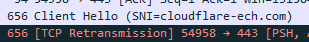

До 05.11.2024 работали все сайты с ECH без “дурилок”. Сегодня уже не пропускает, если не добавить в список сайтов для “дурения” - cloudflare-ech.com. Провайдер МТС. DOH от 1.1.1.1, замена на другие также не помогла.
Я правильно понимаю, что ТСПУ начали разрывать соединение, когда видят, что пользователь пытается подключиться к сайту с ECH? Кто-нибудь еще столкнулся с этим?
Подтверждаю. Рутрекер, бабочка - оба не открываются, коннект ресет еррор. Ростелеком. DoH от комсс
Добавил в обходилку dns.controld.com - заработало
И снова сломалось. Опять коннект ресет еррор
билайн
все работает на данный момент (doh Cloudflare)
странно, что они именно так поступают, в описании инструкции к dpi оборудованию написано, что они впринципе могут отключить ECH
Неужели они выстрелят себе в ногу? Ведь это столько сайтов накроет. Разумнее просто надавить на CF.
Кстати, тут рутрекеровцы стали жаловаться на невозможность скачать торрент файл. Вроде как связали с kyber, который недавно включили в браузерах. Может быть дело в этом?
Ну родят белые списки. Где ограничение не будет работать… (что бы бизнес не убил)
А так всем все равно на проблемы индейцев
Проверил с включенным и отключенным kyber. Также сайт не работает (тот же rutracker). Торренты качаются, если, конечно, добавить в список этот сайт + cloudflare-ech.com.
Я добавил только cloudflare-ech.com в список и все заработало.
Да рутрекер сами все сломали, походу ) Никак их сайт не работает уже. Бабочка отлично работает.
Мне смысла нет CF добавлять, я не пользуюсь CF
Скорее всего, нет.
Я вообще увидел, что блокнули адрес с CF, когда пытался скачать с megaup.net. Он тоже туда долбится.
Да и к тому же, это было “красной тряпкой” для РКН, когда CF объявила в прошлом месяце о включение ECH на своих серверах.
Yota. Сперва действительно rutracker.org открывался наполовину непрогружая стили, но через пару минут открылся как и прежде. Мне кажется это временные проблемы на стороне самого рутрекера, и не нужно заранее хвататься за сердце.
Тоже сейчас перескочил на коммс и добавил этот адрес в лист, но не работает.
А вот если добавлять cloudflare-ech.com, то работает.
Видимо, DoH здесь вообще ни на что не влияет, а исключительно этот адрес.
на мтс тоже самое при чем задело не только рутрекер
Протестировал различные DoH. Вот результаты на данный момент (не работают в том плане, что не пробивают сайты с ECH без “дурилок”):
- Comss.one DNS - не работает;
- AdGuard DNS - не работает;
- Control D - не работает;
- Quad9 DNS - пробил ECH один раз и умер. Больше не работал;
- Cloudflare - не работает;
- OpenDNS - не работает;
- Яндекс.DNS - не работает, но тут и не удивительно;
- Google DNS - не работает;
- Alternate DNS - не работает. Убивает интернет вообще.
Утечки ДНС не наблюдается. Вроде, провайдер не подменяет ДНС.
Сколько ДНСов полегло в бою с РКН
Но на сколько долго они будут лежать не известно
Решили не мелочиться и все самые популярные dns резольверы накрыть
Я бы не сказал, что проблема в DNS. Они продолжают работать, а проблема в Cloudflare.
Сайты с ECH подключены к системе CF, а CF в свою очередь подключает сайты к ECH даже с подпиской free. Но это как я понимаю.
Интересно еще взглянуть на сайты с ECH, которые не заблочены в РФ. Может они тоже накрылись полностью. Но таких сайтов не знаю, может кто другой найдет.
Взял листы сайтов с ECH от Ori и начал их проверять без “дурилок”.
Как итог, они не работают (все 20336 адресов не проверял), так как все долбятся на cloudflare-ech.com, который, теперь, наверное можно заявить, блокируется РКН. Так что, проблема достаточно глобальная, а не только для рутрекера и бабочки.
Хорошо,что просто замедляют а вот если бы по ip блокнули то была бы большая проблема
Проверил. Да, не работает без “дурилки”.
Но это тогда выстрел в голову, так как полегли сайты, которые совсем не причем.
Не говори гоп
У части провайдеров походу произошел выстрел в голову.
Согласен. На том же билайне у меня все робит, но вот проводной умер.
Интересно попробовать малоизвестные DNS…
Скорее всего, не поможет, так как сайт будет “стучаться” к ECH Cloudflare, а его замедляют.
Но попробовать стоит, только я малоизвестных DNS не знаю. Ждем отзывов других людей.
билайн теперь тоже заблокирован по sni [cloudflare-ech.com]
впринципе можно либо его добавить в хостлист
либо сам сайт, но тогда сайт подтупливает некоторое время при обращении к CF
{kind=link}
Да, я тоже проверял в глобале, но коннект не проходит. Error.
напрямую открывается, но без добавления в хостлист не проходит проверку защита sni
https://www.cloudflare.com/ru-ru/ssl/encrypted-sni/
в вайршарке при открытии ECH сайта соответственно обращения идут сначала к cf
РТ Урал, подтверждаю нерабочий ECH (cloudflare и гугла) с сегодняшнего числа.
и спасибо ркн за самые увлекательные конкурсы в этом году. также ждём сломанный рунет на новогодние праздники.
У меня даже результаты не выводятся, пока обход не врубишь. Видимо, стопорится на SNI и сайт ломается.
выведутся минут через 5
Значит должны перестать открываться все сайты на Cloudflare, поддерживающие ECH, даже те, которые не заблокированы (при условии включенного ECH в браузере, конечно). У кого-нибудь есть пример, чтобы проверить?
Вот, скинули выше. Я проверил, у меня не робит без “дурилки”. Сайт на ECH. Проверял чекером от Ori.
То что не сломается силами РКН , то отвалиться силами бизнеса.
Щас просто в игру бизнес сегмент не пришел и не начал разбираться.
Допекут и состав РКН будут вешать…
Йота, Нск. ECH накрылся. Проверял в последнем ungoogled chromium (130.0.6723.91) с дефолтными настройками на линуксе.
- DoH в браузере включен (Cloudflare, OpenDNS)
Браузер пытается подключаться с ECH. Таймаут. - DoH в браузере отключен. В системе указан (нешифрованный) 1.1.1.1 вместо провайдеровского.
Браузер пытается подключаться с ECH. Таймаут.
Провайдер DNS не подменяет. Браузер отправляет HTTPS запись, в ответе в Wireshark видны параметры echconfig. - DoH в браузере отключен. В системе указан провайдеровский DNS 10.0.0.1.
Браузер не использует ECH, в SNI отправляет адрес сайта (например,rutracker.org). Ошибка SSL.
Однако, провайдер DNS не подменяет. Браузер всё также отправляет HTTPS запись, в ответе в Wireshark всё также видны параметры echconfig, однако браузер не пытается использовать ECH, в отличии от варианта 2 (где была попытка использовать ECH, несмотря на отключенный DoH).
Правда, Meduza таки прорвалась после нескольких попыток и стала открываться какое-то время. Но rutracker, kinozal нет.
https://ysaa.ru/ не открывается. Но ошибка другая, сразу появляется ERR_SSL_PROTOCOL_ERROR. В Wireshark видно, что ECH не используется там, а SNI ysaa.ru, но соединение не устанавливается почему-то. Мне так и не удалось добиться его открытия.
Под VPN однако https://ysaa.ru/ открывается и использует ECH.
РКН всё-таки выстрелил себе в ногу. Но действительно вопрос, много ли невинных сайтов затронуло?
ECH включен в современных браузерах и не отключить. DoH может быть по умолчанию отключен. Но браузер пытается использовать ECH даже с обычным DNS (это возможно). Но почему-то кроме провайдеровского, хотя параметры echconfig в ответе видны.
Действительно, хотелось бы побольше валидных сайтов для проверки. А то окажется, что их почти и нет. А за CF с ECH на бесплатном тарифе сидят только заблокированные.
Не очень удачный пример. https://ysaa.ru/ по какой-то причине не откывается даже тупым curl без поддержки ECH. Висим после отправки Client Hello.
К сожалению, других примеров больше нет.
Проверял ECH сайты из списков Ori (не работали без обхода), его же чекером и этот сайт проверял. Он выдавал, что ECH support.
Вот ссылочка на листы, а вот на тестер.
это хороший пример
в вайршарке первым идет client hello от cf
Скорее всего ТП провайдеров посоветует людям отключить DoH и использовать провайдеровские DNS в случае каких-либо жалоб, да и всё. Назад в прошлый век.
Да, но только под впн. С ru ip ech нет, но почему-то и коннекта нет.
Вот только у меня даже с провайдерским ДНС ничего не работает.
Вот хороший пример: https://encryptedsni.com/. Да, работает только при отключенном ECH.
я без vpn проверял
Ещё кидайте сайты.
При успешном подключении должен присылать 301 redirect на Cloudflare Browser Check
Сайт http://dtf.ru/ перестал открываться, не знаю как проверить есть ли на нём ECH, но они работают с CF.
Можете проверить?
Уже часа 3 то открывается, то нет. Чаще нет.
https://anifilm.net - рандомный сайт из инета с первой страницы гугл поиска, первый раз вижу его)
обращение в вайршарке идет к cf-ech
Чекер от Ори говорит, что есть ECH
Да, он с ECH
dtf.ru. 202 IN HTTPS 1 . alpn="h3,h2" ipv4hint=104.21.3.131,172.67.130.185 ech=AEX+DQBBXwAgACConhQ/nTGHkIQo9BcbgZ/rAAa1Ew5UWdeXzi/mu1G8TwAEAAEAAQASY2xvdWRmbGFyZS1lY2guY29tAAA= ipv6hint=2606:4700:3033::ac43:82b9,2606:4700:3037::6815:383
Да, не робит без обхода. Но с аниме сложно, РКН вообще любит банить сайты с аниме, возможно, что и этот забанен.
Народ жалуется. Тоже на CF+ECH: WPARTY не работает сегодня? wparty.net не открывается?
у меня нет этого сайта в хостлистах
Он там есть, по крайней мере у меня он сначала пытается долбиться до клаудфлейра, но быстро делает сброс и пытается уже без него, но даже так не открывается.
Как пример, у меня без впн или гдпи не открываются sakhtv, fmhy, hianime, хотя вчера работали нормально. Ну и рутрекер отвалился окончательно, да.
У меня после обеда отвалился рутрекер и бабочка на YTD Zapret сборке от KDS 1.2, перешел на 2.0, на ней работает через DoH, если сайты в листе netrogat, чтобы дурилка не применялась к ним. У жены проверил - тоже самое. Сейчас запустил снова 1.2 ради интереса - все работает на ней на двух браузерах разных, как будто откатили изменения.
Аналогично: https://readli.net
Внес домен cloudflare-ech.com в обход - сразу запустился ряд сайтов. При этом ДНС - резолвер -тот же самый cloudflare.
Йота.
DoH и ECH в браузере включены:
https://encryptedsni.com/
https://anifilm.net/
https://dtf.ru/
не открываются.
DoH в браузере отключен, обычный провайдеровский dns 10.0.0.1:
https://encryptedsni.com/
https://anifilm.net/
открываются.
https://dtf.ru/
стал открываться после нескольких попыток, но неохотно. в wireshark тем не менее присутствуют cloudflare-ech.com и много ретрансмиссий.
Спасибо, теперь всё перечисленное открывается
Что любопытно, если пустить через иностранный обход, то сайты у меня показывают, что я условно в Нидерландах, а если пустить через российский ВПС, то я “остаюсь” в России. Пока не понял механизм, но может кому понадобится. Проверял на https://check-host.net
у меня идет несколько попыток в ech (около 6) , затем уже обращается напрямую по sni
(но страницу надо несколько раз перезагружать в хроме, либо ждать в ff)
Проверил сайты (в последнем ungoogled chromum 130 на линуксе):
sakhtv.ru
fmhy.net
hianime.to
readli.net
10.doramatv.one
С DoH и ECH под Йотой все не открываются.
Без DoH и с провайдеровским DNS тоже почти все не открываются, но может иногда один начать открываться (sakhtv.ru) после чистки профиля или наоборот перестать открываться. Так что браузер и с провайдеровским DNS пытается использовать ECH.
wparty.net открывается всегда.
Все сайты открываются в браузере Basilisk, т.к. он не поддерживает ECH, молодец какой.
Спасибо за инфу. Я особо не ждал. Вываливалась ошибка в ungoogled chromum после долгой попытки коннекта.
Придётся использовать Pale Moon и Basilisk. Они не поддерживают ECH. Или браузеры времён Chromium 118 (октябрь 2023), где #encrypted-client-hello можно отключить. Примерно с 121-122 версии настройку убрали. Там как раз и оформление вкладок ещё нормальное.
Upd: хотя, в обычных лисобраузерах же тоже можно отключить.
На РТ Юг сегодня отвалились DoH-серверы Cloudflare и ControlD.
Именно DoH сервера, не cloudflare-ech.com? Т.е. никакие сайты с DoH не открываются? Это что-то новое. У меня DoH Cloudflare работал.
у меня к примеру мой же сайт перестал открываться в файрфоксе, бред короче
Проверил. Все-таки ECH.
Только до компа добрался, не все сайты чекал.
А не в курсе, можно ли отключить ECH для сайта за Cloudflare?
{kind=link}
В платной версии да, в бесплатной нет
Ок. Понятно.
@trn - нет на Free тарифе такой настройки. Уже находил это 
ну значит остается только поплакать, к сожалению(
и обходы использовать
Или временно отключить проксирование 
Никогда бы не подумал что ркн настолько все равно работают интернет или нет
Ему все равно
Но бизнес будет их материть
Чета у вас там локальные проблемы.
У меня всё работает, и там нет дроидов, которых мы ищем.
Да уж ну и дела. У меня ech попал в автолист еще 31 октября)) я то думаю втф. А в хроме и не заметил в итоге потому что там изза regedit на экстенд манифеств2 днс отвалился 
Если кому то реально его надо офнуть - сделайте так чтобы “браузер управлялся организацией”. Оно не дает ничего с днсом сделать и сайт фейлит тест на ech но все грузится нормально
в хроме ситуация получше была лично у меня,
У меня на скайнете тоже отвалилось. В автохостлист сразу добавился cloudflare-ech.com - заработало. Вообще, этого стоило ожидать. Сразу было понятно, что с ECH они будут бороться.
Кста, проверил в ватерфоксе, т.к. там oblivious DNS-over-HTTPS из коробки. Думал, может, как-то поможет, но нет. Точно так же все сайты с ECH отвалились.
у меня в файрфоксе все намертво отвалилось, я думал я идиот так как только машину в германии взял новую, думал настроил не так, через хром с горем пополам открывалось, а потом увидел что ркн как всегда себе в штаны насрали
вот сейчас включил впн и начало грузить все
тоже cloudflare-ech.com появился через аутохост, не сайты которые юзают ECH (на сколько я понял) валятся в ERR_CONNECTION_RESET
да, все чинится просто обходом блокировки на этом домене, в изначальном посте(?) и написано это
добавлял
значит моя страта не работает под эти домены
Хз. Возможно ваша стратегия его ломает? Например, известный факт: клаудфлейр не отбрасывает badsum. У меня стоит fake split2 badseq.
А вообще, странное дело. Через курл этот домен будто и не заблочен? Даже если там замедление, это не должно особо влиять, ДНС ответ же мало весит?
badsum на трубе, на основе тоже fake split2 badseq
Похоже блокировка учитывает не только SNI. Например как здесь Блокировка шифра в сторону Cloudflare на ТСПУ - #6 by ValdikSS
тыц, в ff сайты работают, в хроме нет
у меня работает на самом дефолтном конфиге
--dpi-desync=split2 --dpi-desync-split-seqovl=1 он без какого либо фейка и фулинга. поэтому сайты не должны ломаться
это ужас какой-то, рили часть интернета тупо отвалилась. и никакие белые списки не нужны. есть вероятность, что фарш назад прокрутят, а то это уже ни в какие ворота?
Я думаю, что прокрутят. Временно вернут все назад, чтобы ресурсы смогли подготовится и заблочат в декабре уже перманентно. Тогда сегодняшнюю блокировку можно будет рассматривать как “сигнал” - “дорог сайт? - уходите с CF”.
Да. Я проверил http, https и http3-only. И все работаю без обхода. Но в браузере сайты с ECH не открываются, если этот домен не добавить в хостлист.
Похоже, так и есть.
А почему именно в декабре?
Чтобы надолго не откладывать. Это же мое предположение. Я от балды срок назвал. Месяца же достаточно, чтобы съехать с CF?
Даа… Когда там база , кучу всего…
Найди хостинг, заточи сайт под это, переделай бизнес…
 РКН найдет работы для всех
РКН найдет работы для всех
мде, ну в рунете может и перейдет часть, а остальное… прям ноль поводов для радости, конечно
Консольный curl-ech тоже накрылся. Все сайты. Что интересно, иногда прорывается, но очень редко.
curl --http3-only --ech hard --tlsv1.3 --doh-url https://cloudflare-dns.com/dns-query -4 -v URL
Пробовал также wheezy и убирать --http3-only.
Можно не съезжать, а платный тариф взять и отключить там ECH. Хотя, неизвестно что CF будет делать дальше с ECH.
в общем да, сделал попроще страту для cloudflare-ech, сайты заработали (хотя на основе у меня тоже сплит2 с бэдом)
Не проще ли теперь просто выключить ECH в браузере, чем добавлять его в листы обхода?
Chrome: chrome://flags/#encrypted-client-hello → Disabled.
Firefox: about:config → network.dns.echconfig.enabled → false.
Браво
А ничего , что с некоторых версий это обязательно стало ?
Хотя тут 2 пути:
Браузеры без ECH
Версия, где можно отрубить
Хм, прохлопал этот момент. В актуальных версиях Chrome-based браузеров действительно нет опции. В Firefox все еще можно отключить.
Хотя для Chrome должно быть достаточно отключить Secure DNS в настройках безопасности (chrome://settings/security). Минус что теряется этот самый безопасный DNS.
Не, выше писал, что хром лезет за ech даже в обычный dns.
у меня не лезет, win 10
У меня роутер пихает днс сервер, что мат стоит 
Хоть данная функция была включена, но сервер “днс” был не выбран
win10 старьё, в линуксе лезет.
Ну я взял и поднял DoH
Так что я теперь рулю браузером
Да. Это всё печально и, к сожалению, ожидаемо
И это ещё не самый жёсткий способ. могли вообще выключить тлс1.3 как в китае, или обязать использовать хромиум-гост\яндекс\спутник итд
Клаудфлэйр вряд ли что-то будет делать по этому поводу. глабальный инет всё равно передёт на есн со временем. а у нас появится аналог КФ. на который перейдут сайты внутри рф. Такой лайтовый способ ввода вайтлиста.
Пока сижу на хром 109. выручает.
Я так сделал на пол года - не поверите но вычислили и начали специально мешать работе. Используйте ВПС не очень известный может поможет
У меня сайт на бесплатном тарифе CF, посещаемость вроде не просела или совсем чуть-чуть, процентов на 10. С ECH не открывается, да. Но видимо достаточно мало народу его использует, у меня 2/3 аудитории - Россия.
Cloudflare вообще всем бесплатным юзерам включила ECH против воли этих самых юзеров на все домены, у меня сайт за CF стоит, на нём ECH включён, хотя я его не включал. И таких как я много, и много сайтов стоящих за бесплатным CF, у которых сисЬадмины понятия не имеют почему теперь не открываются их сайты. Да та же ysaa.ru. Посмотрим как быстро они найдут проблему, и как быстро отключат ECH целенаправленно, в дэшборде Cloudflare.
Есть какие нибудь идеи как обойти?
В общем, на моем провайдере, чтобы сайты с ech начали открываться, достаточно вот такой простой вещи --wf-tcp=443 --hostlist="cloudflare-ech.txt" --dpi-desync=disorder2 Даже без фейков обошлось.
Пробовал, в качестве эксперимента, пустить cloudflare-ech.com через прокси цензортрекера - не помогает. Любопытно.
Для незаблокированных сайтов:
Отключить ECH в Firefox или в старых (годовой давности) Chromium. Также можно попробовать отключить DoH.
Если в этой схеме браузер управляет маршрутизацией, какие домены заворачивать через прокси - то не удивительно, что не сработало, он же по настоящему доменному имени выбирает, а не по подставленному Outer SNI.
Ребята, это всё конечно хорошо, но сайт ysaa.ru оказывается заблокирован Роскомнадзором видимо ещё давно. Если отключить ECH в браузере, и отключить всякие дурилки, то (как минимум на Йоте) будет переадресация на forbidden.yota.ru.
И кстати, на этом же сайте ysaa.ru в самом низу присутствуют ссылки на порнографические материалы. Значит этот сайт был кем-то украден, какими-то хацкерами, так как у ЯГСА этот сайт с 2020-го года не используется, вот РКН его и хлопнул ещё до появления этих ваших ECH.
Плохой пример вы привели тут в треде. Найдите какой-нибудь другой сайт который принадлежит также образовательной структуре, или любой другой структуре, и который стоит за CF и на нём включен ECH. Если таких не будет, то говорить что РКН выстрелил себе в ногу - нельзя. А ценность сайта ysaa.ru нулевая, так как принадлежит не академии, а какому-нибудь злоумышленнику Васе Пупкину.
Это свидетельствует на что правительство пойдет ради цензуры даже если придется сломать пол интернета.
Как мне преподаватель говорил «иллюзий быть не должно». (Привет если вы читаете топик)
Скорее всего потом отмажутся, а мы ж предупреждали отказаться от CF. И такую бумагу, приказ видел давно 2 года назад, а приказан т.е датировка его еще ранее издан в 17 году что ли.
Это типа как рекомендательный приказ был.
P.S Всем ребятам участвующим в решение troubleshooting респект. Накидали годные варианты.
Как пишут тут
“для владельцев сайтов, ECH придуман для TLS 1.3, просто выключить поддержку TLS 1.3 в разделе SSL > Edge Certificates > TLS 1.3 и все”
Сейчас прогнал поиск по первой тысяче самых популярных доменов в мире, и там всего 4 адреса с ECH 
cookiedatabase.org
discordapp.com
wyzecam.com
openstreetmap.org
Зато среди заблокированных РКНом сайтов - ECH у половины…
Мой nyan.pw перестал открываться. Сижу на Free тарифе CF.
Момент.
Перестал работать VPN с маскировкой под samsung.com (у него включен ECH). Давало ошибку PR_END_OF_FILE_ERROR в Firefox.
Поменял маскировку на odysee.com (у него оно не включён) и всё заработало.
У меня официальный сайт телеканала 2x2 не грузится (2x2tv.ru и media.2x2tv.ru). А еще dtf.ru не открывается.
Эти сайты за Cloudflare и у них включен ECH.
Я отключил TLS 1.3 на своем сайте, более часа назад, до сих пор не отключился.
Кто-нибудь еще отключал, это вообще работает?
Вы будете смеяться, но РКН 10 лет назад именно об этом и предупреждал…
{kind=link}
Мне не смешно. Я знал, что рекомендовал и рекомендательный характер приказа был. Просто сейчас в текущих реалиях на это смахнет и все. Просто тут пишут бизнес, а че бизнес. Этому бизнесу скажут, а мы вот ж говорили (аж больше 10 лет назад). Да, спасибо, что нашли. И вроде было еще раз.
Ну, а на людской сброд им пофиг, что им там надо. Делаем че хотим, а народ потерпит.
А еще Ростелеком тоже предупреждал, что сервисам Google тоже типа каюк будет в ближайшее время. Достаем VPN и попкорн.
Работает, я выше уже писал, что на своём отключил. Отовсюду проверил - работает.
По поводу “выстрела в ногу”: проверьте https://school329.spb.ru/ Сайт за CF. Есть ECH, поэтому может не грузиться. Этот сайт случайно нашел в этом списке https://www.gov.spb.ru/gov/terr/nevsky/obrazovanie/shkoly/
С 2021 года в блоке
{kind=link}
Как быстро проверить все свои сайты в закладках есть ли у них ECH формируем лист формата
suite1.com
suite2.com
Записываем в файл suite_my_books.txt (название не играет роли принципиально, но если правите, то в команде подправьте)
Запускаем команду
truncate -s 0 ./output_check.txt && for suite_check in $(cat suite_my_books.txt); do curl -4s "https://dns.google/resolve?name=${suite_check}&type=HTTPS" | jq; done >> ./output_check.txt
Для работы требуется curl и jq, чтобы они были установлены.
После выполнение смотрим файлик output_check.txt если под соответствующей записью домена есть ech=, то у сайта подрублен ECH. Проверяйте откроется ли он без VPN\дурилки.
P.S У меня вообще пиздец по закладкам вообще почти ВСЕ.
Из 449. 74 сайта с ECH
AdGuard Home
Filters - Custom filtering rules
#
# block - encrypted client hello
||*^$dnstype=HTTPS,dnsrewrite=NXDOMAIN;;
#
Result check
Query Log - Rewritten
Жаль, что нет варианта только cloudflare-ech.com в ответе блочить. Надо будет issue на github создать с предложением, может сделают
аналогично, завернул этот домен в прокси, не работает…
если пустит весь трафик в впн то сайты открывает…
Ну, как выше пояснили, это из-за особенностей работы ECH. Я так понимаю, что там реальный запрос запихивается внутрь запроса к cloudflare-ech. Браузерные ВПН триггерятся по реальному адресу, поэтому проксирование cloudflare-ech ничего не дает. По идее, системные ВПН должны работать? Т.к. запрос уже покинул браузер и там подсунут сни клаудфлейра?
Вот тут подрбнее.
Отключить ECH можно и в последних версиях Chrome: Disabling Encrypted ClientHello in Google Chrome, and Why | Chaser Systems
Аналогичный механизм enterprise policies должен быть и у FF.
Google очень не любит частую смену ипишников. Поэтому я всем сейчас незамедлительно рекомендую взять блокнот и записывать все-все-все сервисы на которых вы когда либо регались на gmail и переводить их в другой мейл, разумеется не русский
По какой-то другой причине перестал работать у вас VPN. Нет ECH на samsung.com.
Хз о чем речь, но спасибо за рекомендацию добавить в блэклист гудбая, сайты вновь открываются.
А так на дефолтных настройках, еще хорошо справляется ныне пошивший Бистро 1.2
Потому что цензоров сильно волновал *.googlevideo.com поэтому у него стратегии ну очень спесифичные которые могут ломать уже другие сайты. Другие, более простые стратегии, работают на каком-нибудь сайте запрещенного калькулятора. Плюс я еще думаю что они хотели сделать как можно больше разных стратегий на разных сайтах чтобы было максимально неудобно в конфигах. Лично я решил использовать запрет чисто для гуглвидео, на другое мне он и не нужен был
ну ведь если весь трафик запихнуть то работает ведь
Сам SNI cloudflare-ech.com не блочится, а блочится только, если есть encrypted client hello в составе TLS Client Hello.
То есть курлом дергать напрямую cloudflare-ech.com смысла нет. Он запустится.
Мне потребовалось в zapret-е увеличить количество фейков с 1 до 3, чтобы пробить блок.
Блочится не на всех провайдерах. Пока.
Чтобы восстановить работу неблокируемых сайтов, достаточно отключить ECH в броузере
В ркн работает гораздо меньше людей, чем тех кто пытается восстановить себе конституционное право в свободном доступе к информации. Поэтому математически их победа невозможна, а успех временный.
Мне нравится твой энтузиазм, особенно учитывая что для тех же плисов нужны серьезные программисты которые дружат с ассеблером и low-level програмированием, а все уехали сейчас… А тех кого вообще интересует ассемблер это только хоумбрюверов и нишовых геймдевов для старых приставок.
Неужели вы вот на полном серьезе думаете, что богатейшая страна не найдет спецов, пускай даже очень редких и нишевых?  В крайнем случае приедут “иностранцы”.
В крайнем случае приедут “иностранцы”.
Это примерно как рассуждать, откуда в Якутии берутся бананы, ведь они же там не могут расти, там же холодно. 
Не надо надеяться, что государство не добьется поставленной цели. Пусть криво и косо, с сопутствующим ущербом, но сделают как им удобно.
Страна-то найдет, другой вопрос а сможет ли ркн платить такие вилки которые эти спецы за работу запросят
При чем тут ркн. РКН - это исполнительный орган. Он ничего не оплачивает сам, точно так же как сотрудник полиции, например.
Проблема решается изи, путём добавления соответствующего домен в спуфер. Или просто выключением DOH в браузере. Ну да, заблочили, неприятненько… Особенно наверно для тех наивных людей которые помнится рассуждали, что если технология ESNI (ECH) будет везде повсеместно использоваться на всех ресурсах, то короблка (тспу) ослепнет и станет бесполезной, мол грядёт закат этих чёрных ящиков… 
Ага с нИхуевыми идеями Россия создает собственную инфраструктуру интернета. Теперь для проверки маршрутизации IP-адресов - CNews
Чтобы твой трафик на подлете в блэкхол улетал как говорят хостера.
Ну так просто ведомство.
Какая разница если в итоге не работают сайты
Ну а челы куда на работу будут устраиваться? В РКН? И вилки будут обсуждать там же. Я к тому что узкий спец затребует и большую зп, а готовы ему будут столько платить или нет уже другой вопрос
тем временем где-то в ркн
почему рутрекер работает? мы на что 60млрд выделили?)
Спойлер
Кстати, ECH через API можно отключить и на free-тарифе. https://antiddos24.ru/blog/blokirovka-cloudflare-roskomnadzor-seriya-2
Для владельцев сайтов. Вы все еще можете отключить ECH без отключения TLSv1.3 через API.
curl -X PATCH 'https://api.cloudflare.com/client/v4/zones/<zone_id>/settings/ech' -H 'Authorization: Bearer <token>' -H 'Content-Type: application/json' -d '{"value":"off"}'
У токена должны быть права на Zone Settings.
Перед ними поставлена задача и выделены бюджеты. Как они будут решать ее - это уже вопрос десятый. Не решат - полетят головы.
Поэтому так или иначе вопрос будет решен.
Вроде бы софт для DPI Ростелеком поставляет. По кр. мере разработчик ТСПУ rdp.ru был поглощен РТК в свое время.
Спс. Но пока помогает более простой вариант - отключить tls 1.3 в бесплатном тарифе.
(SSL → Edge certificates). ECH работает в TLS 1.3
Так что простое отключение DoH помогает в браузерах на win10/11?
На линуксе вот нет. Правда, проверял только ungoogled chromium последний.
У меня в браузере без Doh не работает ESNI соответственно. По этому должно помогать.
Не знаю как у вас, но у меня отключение TLS 1.3 отключило именно ECH, а не сам TLS 1.3.
здесь ech= пропал:
dig +short example.com HTTPS
но так соединяется:
openssl s_client -connect example.com:443 -tls1_3
Правда сайт не просто проксируется, но и хостится на CF Pages.
Что-то не выходит, вот такое вываливает:
{“success”:false,“errors”:[{“code”:6003,“message”:“Invalid request headers”,“error_chain”:[{“code”:6105,“message”:“Invalid Content-Type header, valid values are application/json,multipart/form-data,application/scim+json”}]}],“messages”:,“result”:null}curl: (6) Could not resolve host: Bearer
curl: (3) URL rejected: Bad hostname
curl: (6) Could not resolve host: application
Что ему не так? Mingw curl виндовый.
{kind=link}
API KEY домена верно вводишь? Взять его можешь например с примера обращения к API то что между zones и settings
Да, верно, брал на главной домена, но в разделе на картинке такой же.
Так, для начала кавычки должны быть двойные, уже легче: "Malformed JSON in request body
Пишут, надо так:
-H "Content-Type: application/json" --data "{\"value\":
"off"}"
но что-то всё равно false
Ага, надо так:
-d "{\"value\":\"off\"}"
Теперь Unauthorized to access requested resource
Токен же должен иметь права на Edit zone DNS?
Так, победил иначе (винда):
> curl -X PATCH "https://api.cloudflare.com/client/v4/zones/<Zone-ID>/settings/ech" -H "X-Auth-Email: *@***.com" -H "X-Auth-Key: <Global Api Key>" -H "Content-Type: application/json" -d "{\"id\":\"ech\",\"value\":\"off\"}"
Это было ожидаемо.
Придётся на ведре отключить DOT / DOH / DOH3 на уровне ОС и в настройках хрома. И терпеть провайдерский днс, который подменяет ответы.
Кто сидел на лисе и при этом не имел поддержки DOH3 на уровне самой ОС, у тех и так ECH не работал (лиса не умеет ECH, когда днс есть только по DOT).
Минус в том ,что теперь вместо условного рутрекера будет на заглушку отправлять. Ну и вообще хуже резолвить.
Плюсы - не придется пол интернета в проксю загонять.
На ПК можно оставить DOH на уровне ОС (dnscrypt-proxy).
Но при этом выключить ECH в конфигах браузеров (пока что).
Ну а заблоченые сайты в любом случае резолвились через проксю. Поэтому подмена провайдера на заглушку не сработает.
Имеете введу в лисе Включить DNS через HTTPS, используя: ?
Я давно его не использую. Это если зайти сюда https://www.cloudflare.com/ru-ru/ssl/encrypted-sni/
называется Защита SNI, у меня на одном прове недавно тоже заблокировали эту фигню, я ещё удивился, просто включил проверить, а она не работает, сначала подумал что я накосячил, но не стал разбираться, с час понял что заблокировали. Вы не путайте с DOH, эта функция в браузере работает немного по другому. А отключил я её, потому что она постоянно, наверно чуть ли не каждых 10 сек отправляет днс запрос и стандартный встроенный в винду кэш днс она не использует, тупо постоянно отсылает запросы, что меня кумарило, нагрузка лишняя на сеть, поэтому я давно не использую эту хрень. В браузере можно вроде выключить поддержку SNI, а просто doh работать будет, почитайте где нить, я не помню как.
SNI она же (ECH) в последнее время открывала сайты заблоченые, поэтому начали блокировать.
Обычный DOH просто использует днс который вы поставите, то есть не прова, а то что вы захотели, тем самым пров не видит куда вы там полезли, точнее логи не сохранят.
Если использовать прова днс, то он может его заблокировать, перенаправить вас куда нить, сохраняет логи всех запросов, чтоб потом когда нить вас подтянуть в случаи чего )
Вот так смотришь, пройдёт ещё немного времени и вернётесь на вин 7, откажетесь от нэта в телефоне и все кто говорил что ему нечего скрывать, изменит своё мнение, если успеет его изменить )
Вижу, что некоторые сайты начали отключать ECH (например DTF), остальные всё также в отключке.
Как починить ech, а не отключать его?
Добавляю *.cloudflare-ech.com в список проксирования антизапрета(со своими прокси) - не помогает.
И РКН даже ничего не прокомментировало (как это было с Ютубом или Дискордом). Просто в тихую накосячили и молчат.
Подтверждаю, что отключение DoH и использование провайдерского DNS возвращает к жизни все сайты с ECH (по моим закладкам), хотя могут быть единичные затупы (сайт может долго открываться, помогает обновление страницы пару раз).
Но сидеть с провайдерским DNS, действительно, как то не очень.
Вот, тут Ori писал об этом, может как-нибудь поможет.
а вам не кажется, что если смотреть чуть наперед, как будто бы DOH уже в принципе использовать в режиме по умолчанию не стоит? Оставить его только для обходных вариантов и всё, ибо рисовать себе такой портрет для провайдера < ркна уже не выглядит перспективно
Лиса (последняя, в годных осях типа линукса) умеет ECH даже с простым DNS (если в браузере DoH отключен, а в системе нешифрованный 1.1.1.1, например).
{kind=link}
Смотрите, rutracker только в днс запросах упоминается, а сайт открывается.
И правда работает ECH с провайдерским днс. Я же проверял несколько месяцев назад - не работало. Недавно запилили?
И почему на ведре тогда не может без поддержки DOH3 на уровне OS? Это я проверял уже буквально недели 2 назад. Когда в андроиде завезли только DOT, то ECH в лисе не пашет. А хрому всё равно. И через DOT на уровне OS будет работать ECH. И если в самом браузере включить DOH3, тем более работает.
Ну да ладно. Теперь уже не важно. Хороним DOH/DOT в ведре.
блин какая разница doh или нет
я сейчас на рабочем пк не смог открыть сайт с ech, когда там нет никакого doh, днс от ростелекома и яндекс браузер
что у вас за методичка по отключению doh
Ну вот на андроид в лисе без DOH не работает и ECH. На пк так же было раньше. Сейчас перепроверил на линуксе - теперь дох не нужен, ECH работает даже с днс по DHCP. Если на ведре так же сделают в лисе, то кирдык. Придётся вообще весь трафик рулить в прокси. Ибо about:config на ведре в лисе недоступен, чтобы выключить ECH.
В хроме конфига тоже нет, но ECH отключается, когда в свойствах браузера нет защищенного днс и на уровне OS нет, ни DOT, ни DOH.
Ещё один головняк добавили паскуды РКНовские.
Да, в 129 завезли.
DNS-записи HTTPS теперь можно разрешать с помощью преобразователя DNS операционной системы на определенных платформах (Windows 11, Linux, Android 10+). Раньше для этого требовалось включить DNS over HTTPS. Эта возможность позволяет использовать HTTP/3 без необходимости использования заголовка Alt-Svc, обновляет запросы до HTTPS при наличии записи DNS и обеспечивает более широкое использование ECH.
Такое сделали либо по дурости, либо приняли серьезное решение на самом верху.
Со временем весь интернет перейдет на ECH, достаточно лишь запилить поддержку из коробки в nginx и прочих. Возможно, это начало того самого Чебурнета ))
Может кэш?
тоже не понял, но гайдов таких полно почему-то
мне не помогло, добавил домен ECH в Zapret
Почему? Якобы это тригернет на более пристальное внимание ко всему трафику? Вряд ли у них до такого техника дошла пока что. Да и зачем тратить ресурсы на такой алгоритм, если в итоге все повыключают DOH и перестанут палиться. Да и в чём палево? DOH не коррелирует с использованием проксей абсолютно никак. При использовании проксей резолв шурует в саму проксю и пров не видит ДНС вообще.
К слову, читал на сагернет рекомендацию по настройке сингбокса. Там упоминается, что нежелательно отправлять udp внутрь прокси, если при этом не прописать использование мультиплекса и TLS-Padding. А днс это udp. Поэтому, я так понимаю, резолвить внутри проксей желательно через DOT или DOH, но не udp и не DOH3). Или через doh3 можно? Мельком глянул, что это такое. Как будто udp вместо tcp уже используется.
Китай не перейдёт и вообще фильтровать интернет любят во многих странах. Те же арабские страны порнуху блочат. А как они это будут делать с DoH и ECH?
Нет, у меня dnscrypt-proxy слушает ДНС запросы от всей системы. В лисе системный днс, соответственно.
Когда-то я тестировал в лисе DOH, плохо работало. Но это было еще до EСH, когда только ESNI появился.
https://www.techpowerup.com - не смог зайти, хотя вчера заходил на сайты которые работают по ECH добавив дурку для cloudflare-ech.com.
Проверил скриптом Ori, а ECH то на сайте нет.
При этом если в хроме отключить поддержку крипто привета то сайт нормально открывается… ничего не понимаю.
В октябре 2024 года компания Cloudflare активировала поддержку расширения TLS ECH (Encrypted Client Hello) на своих серверах, что позволило скрывать от посторонних наблюдателей метаданные, такие как имя сайта (SNI), при установлении TLS-соединения. Это нововведение значительно затруднило работу Роскомнадзора по блокировке запрещенных ресурсов, так как традиционные методы фильтрации, основанные на анализе SNI и DPI (Deep Packet Inspection), стали менее эффективными.
В ответ на это, начиная с 6 ноября, Роскомнадзор начал предпринимать меры по блокировке сайтов, использующих ECH. Пользователи из России стали сообщать о проблемах с доступом к ресурсам, использующим инфраструктуру Cloudflare, особенно при использовании TLS 1.2 и определенных шифров. Анализ трафика показал, что блокируются подключения к IP-адресам Cloudflare при определенных условиях, что свидетельствует о возможных экспериментах Роскомнадзора с блокировкой по TLS fingerprint.
Технология ECH направлена на повышение конфиденциальности пользователей, скрывая метаданные соединений и затрудняя отслеживание посещаемых ресурсов. Однако ее использование создает сложности для государственного ведомства, которое по закону должно блокировать запрещенные сайты. В результате Роскомнадзор может прибегать к более радикальным мерам, таким как полная блокировка HTTPS/TLS-подключений, для которых не удалось достоверно определить SNI.
Роскомнадзор начал блокировать сайты, которые используют шифрования ECH от Cloudflare
Сайт тянет контент (шрифты, CSS, и т.д.) с tpucdn.com. Этот домен с ECH.
Понял, спасибо, хотя по идеи должен был помочь обход cloudflare-ech.com, но проще отключить видимо.
Ottplayer.tv тоже там же?
Нет, я делал Purge Everything, не помогло. Но потом я переделал как подсказал mlebd, Включил TLS 1.3 и отключил ECH через апи.
Смотришь тут:
https://dns.google/resolve?name=ottplayer.tv&type=HTTPS
если видишь ech= значит ECH вкл
или тут:
https://browserleaks.com/ip/ottplayer.tv
если видишь ECHConfigList значит тоже, тут еще показывает чей именно ECH (cloudflare-ech.com)
Куча сайтов легла:
bitcoinwisdom.io
cosmosairdrops.io
midle.io
havacoin.xyz
gblast.gg
elys.bonusblock.io
blastscore.io
easyx.trade
Добавил cloudflare-ech.com в GoodbyeDPI, ВСЕ снова заработали лол, даже проксировать не пришлось))
Или можно этой прогой чекнуть.
Если в ответе NetName: CLOUDFLARENET, а сайт в браузере не открывается, то скорее всего он с ECH. Или без ECH, но заблочен РКН по SNI. Правда, тогда будет не таймаут, а сразу ошибка SSL.
Для этих целей я другую прогу писал, вот тут. А вот тут батник для проверки только одного адреса.
А ещё можно тупо курлом:
for /F "tokens=*" %i in ('curl -s "https://dns.google/resolve?name=meduza.io&type=HTTPS" ^| findstr ech=') do (echo !!! ECH ON !!!)
Мы все такие молодцы, но давайте будем реалистами из всех вариантов, который пользователь быстро и просто может решить проблему это просто отключить ECH в браузере, но давайте подумаем данный вариант не везде применим поскольку приложения-клиенты вот там так не прокатит
В Chrome-based: chrome://flags/#encrypted-client-hello → Disabled
В Firefox: about:config → network.dns.echconfig.enabled → false
и еще представим, что владелец не собирается ничего не отключать в панели CF.
Поскольку из 74 сайта (о которых я писал и которые использую я), которые использовали
ECH отключили только 12 его. Остальные я так понял позже (в течении недели) или вовсе не отключат его.
В новом хроме нету chrome://flags/#encrypted-client-hello. Сайты начинают открываться если сделать --ssl-version-max=tls1.2 но я не уверен как это отразится на работе инета в целом. Upd. добавил cloudflare-ech.com в russia-blacklist.txt, мне помогло (мера популярная, много где написали про это).
Прикол в том, что с VPN это не катит если занести.
видел конечно способ через dnsmasq он сильно специфический требует шлюза с dnsmasq или роутера с openwrt в котором уже есть dnsmasq.
А ну в браузере не включать сам DoH. Я так потыркал вроде работает с вкл ECH в браузере, но выключенным DoH в самом браузере. Сайт по проверке ECH говорит, что он не поддерживается и сайты проблемные открываются.
Если бы только в хроме и браузере была проблема.
Есть IDE, которые в большей части на электроне написаны и IDE могут, что-то “дергать” из сети. А там привет ресурс на котором ECH включен.
Дискорд тоже на электроне написан, а их главный домен тоже на ECH сидит.
Всякие андроидные приложения-клиенты как там решать проблему. Про iphone вообще промолчу т.к не реально.
Привожу пример с андроидом вот у меня есть неофициальный клиент ChatGPT
Он стучится к openai.com,chatgpt.com они за CF стопудово я предполагаю, что там включен ECH отключать я не думаю, что они будут им еще лучше 100% пользователи из РФ не попадут к ним.
И таких примеров сотни.
И все это надо сделать типа какой-нибудь “походный” вариант т.к не будет у тебя шлюза с соответствующим ПО или роутера. Поэтому и пишу дело не только в браузере.
Не совсем ясно может быть ech запись быть у домена, но не использоваться ECH. По типу как AAAA-запись у домена, но не факт, что сервер на соответствующем IPv6-адресе слушает порт.
Firefox 129:
В Linux, Windows 11 и Android 10+ записи HTTPS DNS теперь резолвятся средствами операционной системы. Таким образом, если пользователь включил поддержку DNS-over-HTTPS в операционной системе, больше не требуется дополнительно включать DoH в браузере. Кроме того, это позволяет использовать HTTP/3 без заголовка Alt-Svc и автоматически апгрейдить запросы HTTP до HTTPS, если присутствует запись HTTPS DNS. Немаловажно, что при этом работает и поддержка Encrypted Client Hello (ECH).
Почему? Якобы это тригернет на более пристальное внимание ко всему трафику? Вряд ли у них до такого техника дошла пока что. Да и зачем тратить ресурсы на такой алгоритм, если в итоге все повыключают DOH и перестанут палиться. Да и в чём палево? DOH не коррелирует с использованием проксей абсолютно никак. При использовании проксей резолв шурует в саму проксю и пров не видит ДНС вообще.
Да, привлечёт внимание, и помимо обычного массового сканирования будут таргетно проверять. Касательно того есть ли у них такая технология - она есть у некоторых братушек, опыт которых активно перенимается. Я слышал, что DPI даже может автоматически палить reality по двойным запросам. Смогут ли они даже в приближенном будущем чето найти, вопрос один, другое дело - это постоянно находиться под подозрением, рано или поздно пробьют.
А не надо юзать реалити. Надо свой домен делать. И если будет стабильно работать, то оставлять TLS Padding + мультиплекс. У меня друг в китай скоро полетит. Попробуем протестить их фаерволл, если у него время будет. Но проблема в том, что фаер ситуативно работает и не везде. Как и у нас.
Тут поинт в том, что реалити одна из самых продивнутых схем, но по одним лишь повторым запросам dpi ловит такие тонкости, чего уж говорить про днс.
Я не думаю, что ТСПУ будут особенно усложнять в этом направлении. Мафиозно-кгбшная шобла может себе позволить более радикальные решения на десятилетия вперед. И когда пилить на модернизации ТСПУ им надоест, они пойдут в сторону повсеместного МИТМ. Ну то есть каждое клиентское устройство будет вылезать в интернет через МИТМ виртуалочку в локалке прова. Ты сам добровольно поставишь паленый сертификат, сам установишь паленый браузер от маилру или яндекса. И тут уже снимаются все проблемы щита и меча. Потому что твой TLS станет открытой книгой для этой митм виртуалки. Она будет полностью анализирвать весь трафик. Можно будет даже отдельные странички на https сайтах банить. или анализировать по ключевым словам твои коменты на любых сайтах и тут же автоматом присылать штраф тебе в госуслуги.
Конечно будут издержки. И если ты владелец бизнеса или учёный или гебнявый или чиновник. То тебе выдадут шлюз в обход митма. И даже с выходом в глобальный интернет без фильтров через условный селектел. Этот выход в интернет будет по ВПН, который конечно будут тоже анализировать. Но фильтровать не будут, чтобы все работало стабильно. И будешь платить x50 за такую привилегию.
Куда-то в ту сторону всё это поедет. Я не особо шарю, но я художник, я так вижу.
Не ну с таким размахом можно и в принципе общий доступ к интернету запретить, и выдавать только на лицензионные компы, с гос ОС и запретом к чему либо вообще прикасаться.
Если говорить про известные сценарии, а это опыт Ирана и Китая, то будет скорее что-то похожее на то как у них
{kind=link}
походу хабр туда же из-за етого я понтдазревайю
Как-то слишком депрессивно.
Но будут ли в РКН это делать?
Если вспомнить их “борьбу” с телегой - то там была подлива.
Вспомним их “борьбу” с торрентами - как итог, их количество не уменьшилось, а лишь увеличилось.
Но вот с ECH, да, подлива под себя. Хорошо, что это было не по IP.
Сейчас на заблокированных (замедленных) сайтах стоят очень щадящие параметры, которые обходятся довольно простыми стратегиями. Исключение, наверное, ютуб и голосовой чат дискорда, но там тоже уже больше месяца ничего не менялось по ужесточению замедления (сужу только по себе).
Возможно, что их “коробки” уже выдали всё возможное и поэтому этим клоунам может прийти в голову повторить сценарий с телегой (а это будет печально).
Надеюсь, что они внесут в список 127.0.0.1 и тогда всем станет хорошо.
По поводу того, что им выделили деньги на оборудование - сильно сомневаюсь, что эти деньги будут потрачены именно на оборудование, а не будут распилены, как и прошлые.
Если у пользователя не включён DoH, то пользователь даже не заметит проблемы, т.к. ECH не работает. У многих он включён?
Даже, если у многих включён, пользователь, скорее, выключит DoH, чем откажется от посещения сайта, ведь, как известно, если какая-то мера безопасности мешает и отключаема, она будет выключена при первой же возникшей проблеме.
Сложно сказать.
По умолчанию стоит провайдерский ДНС, но сейчас же популяризация goodbye DPI, ByeDPI, Zapret и в каждой второй инструкции указано, что нужно зайти в настройки браузера и включить безопасный DNS.
Будут ли теперь инструкции к обходам указывать, что уже нужно отключать, не знаю. А для самых неопытных юзеров это может вызвать проблемы по незнанию.
По поводу отключения DoH была странная ситуация, так как в день блока ECH провайдерский DNS отказывался открывать сайты с ECH. Заработало все только на следующий день.
Для GDPI, в принципе, это не обязательно, т.к. там есть dns-redir
Не знал про это. Думал, что там нужно какой-то отдельно ключ прописывать. Что-то вроде --dns-addr.
хотя не, не из-за етого, там нет ech’а в записи
{kind=link}
Проверил Habr.
Вроде, работает без включения обхода.
Проверил на Chrome, Edge. Провайдер от МТС, DoH включен.
Ну у тех кто недавно браузер поставил DoH по-умолчанию включен в FF\Chrome
Он работает только при системном DNS подразумевающем такую опцию. У провайдерских DNS нету doh, и даже у Яндекса он пропал
Да хватит уже про DOH говорить. Поскрольте выше. Уже выяснили, что браузеры начинают работать с ECH без DOH, даже с провайдерским днс.
Проверил на firefox в linux - ECH работает с ДНС от ТТК, который получен по DHCP.
Да, ладно, а я и Блокировка (замедление) ECH Cloudflare - #210 by dartraiden вот не согласны.
Он тебе еще не то нарисует 
 и nxdomain.
и nxdomain.
До 129 версии в лисе так и было. Сейчас же она запрашивает ech даже если стоит системный “незащищенный” резолвер, а doh в настройках выключен. По крайней мере, на линуксе встретил именно такое поведение
{kind=link}
Ну, а в Windows 10 при тех же настройках не работает он.
{kind=link}
Млять и вообще три варианта выбора ну это зашквар. Должно быть 2. 1. Вкл и поле выбора поставщика с возможностью вписать свой 2. Выкл т.е использовать стандартный на 53-ом порту.
Не дотыкали вероятно пока еще. Ну да еще появится, как смержат все пр))
На Windows 10 - ESNI работает только в связке с Doh.
Я ещё раз проверил всё. И расклад такой на данный момент.
Firefox на Linux:
- Юзает ECH даже с обычным udp DNS от провайдера, который ваш роутер получил по DHCP. В настройках браузера при этом шифрование DNS может быть ОТключено тоже.
- Если на уровне OS запущен DOH (dnscrypt-proxy) - ECH работает тем более (ну или можно включить DOH в самой лисе с тем же результатом).
- Можно ОТключить ECH в лисе через два параметра (и при этом можно оставить DOH на уровне OS):
network.dns.echconfig.enabled
network.dns.http3_echconfig.enabled
Firefox на Android:
- Пока что не использует ECH, если на уровне OS нет поддержки DOH3. Поддержку DOH3 начали завозить с 12-13 ведра. Но не все вендоры это пока что разрешают. Если на уровне OS есть только DOT, то ECH в лисе не заработает. Проверил на хуавее с 12 ведром.
- Можно ОТключить ECH в лисе через два параметра (и при этом можно оставить DOH3 на уровне OS):
network.dns.echconfig.enabled
network.dns.http3_echconfig.enabled
Но на android это делается не через about:config, а по адресу (да-да, не удивляйтесь):
chrome://geckoview/content/config.xhtml
В ночной сборке, вроде бы, стандартно через about можно зайти в конфиг.
! DOT прописывается в ведро так: “dns.google”.
! DOH3 прописывается в ведро так: “https://dns.google/dns-query”. (если ведро не позволяет сохранить запись, начинающуюся с https, значит DOH3 не завезли).
Хром на linux:
- Юзает ECH даже с обычным udp DNS от провайдера, который ваш роутер получил по DHCP. В настройках браузера при этом шифрование DNS может быть ОТключено тоже.
- Если на уровне OS запущен DOH (dnscrypt-proxy) - ECH работает тем более (ну или можно включить DOH в самом хроме с тем же результатом).
- С недавних пор ОТключить ECH в хроме вообще нельзя:
Cannot Disable Encrypted ClientHello In Latest version of Chrome and Edge? - Google Chrome Community
У хрома на android:
- В отличие от лисы, есть свои настройки DNS внутри браузера. Поэтому ,если даже поддержки DOH3 нет на уровне OS, можно включить DOH3 в самом хроме и ECH будет работать.
- Если ОТключить безопасный DNS в хроме, тогда он НЕ юзает ECH при условии, что на уровне OS НЕ прописан DOH3.
- Если на уровне OS прописан DOT, то хром НЕ юзает ECH, как и лиса.
UPD
Можно ОТключить ECH в хроме на ПК через политики:
Обсуждение: Блокировка (замедление) ECH Cloudflare - #290 by denium
Создать файл /etc/opt/chrome/policies/managed/ech-disabled.json (все папки в пути тоже создать) с содержимым:
{ "EncryptedClientHelloEnabled": false }
PS Венды в хозяйстве нет. Сами проверяйте и дополняйте.
PS2 Хром уже не нужен - сломали динамический фильтр сетевых запросов третьим манифестом и теперь отвалился smart proxy и ublock. Ну и плюс ECH на ПК не выключить. Помимо всего остального это окончательно ставит крест на нём. Ни жестов мыши рабочих нет, ни режима чтения, ни элементарного вроде переключения табов в порядке активности по ctrl+tab и поддержки PAC или хотя бы сокс5. Сорян за офтоп, накипело.
MV2 можно “протянуть” до июня 2025. Но есть ньюансы.
“Рекомендуем отказаться от CDN-сервиса CloudFlare”
https://cmu.gov.ru/ru/news/2024/11/07/рекомендуем-отказаться-от-cdn-сервиса-cloudflare/
 Роскомнадзор рекомендует владельцам интернет-ресурсов в России отказаться от обеспечивающего быструю доставку контента CDN-сервиса американской компании CloudFlare, которая использует технологии для обхода ограничений доступа к запрещенной информации, говорится в сообщении ведомства.
Роскомнадзор рекомендует владельцам интернет-ресурсов в России отказаться от обеспечивающего быструю доставку контента CDN-сервиса американской компании CloudFlare, которая использует технологии для обхода ограничений доступа к запрещенной информации, говорится в сообщении ведомства.
отключить расширение TLS ECH или, что правильнее, использовать отечественные CDN-сервисы
Спорим, что это же “толкнут”, когда заблокируют Play Market. Ну так че млять есть Рустор это типа правильней будет, его использование.
Еще и движ сделают, а там VPN есть, которые Google отказалась удалять. Ну типа не такие податливые как яблочники 

Короче вменяемого ответа можно было и не ожидать. С такой риторикой можно все и вся было заблокировать
https://www.icy-veins.com может кто-нибудь открыть, уже второй день не открывает без vpn?
Самое смешное, что
которое не является технологией обхода.
Как всегда в РКН народ за дебилов держат.
Казалось бы, “если не можешь бороться - возглавь”, но РКН просто уничтожает всё нах… И пусть хоть весь интернет при этом упадет.
Работает.
Открыл. Провайдер МТС, DoH включен.
Может не добавлен cloudflare-ech.com в список Zapret или GDPI?
Поэтому написано - “для обхода”.
Как можно использовать технологию не для обхода для обхода?
Это же нонсенс.
Скоро в роскомпозоре будут генерировать посты нейросетью.
А DoH какой у вас? У меня провайдер ростелеком Калининград, DoH https://dns.controld.com/comss .
Проверил 3 DoH. Google, CF и Comss. Везде работает, но только со средством обхода блокировок. Сам сайт у меня не добавлен, только cloudflare-ech.com. Попробуйте тоже его бахнуть в список.
Можно также отключить DoH и пользоваться провайдерским DNS. Тогда даже обход блокировок не нужно включать (возможно, что не у всех робит).
оппа, наш
Ну вот так легко. Какая-то технология сделана для одного, но используется в итоге для обхода блокировок. ESNI - технология шифрования поля SNI, чтоб сохранять конфиденциальность от третьих лиц, а то что это помогает также обмануть ящик цензуры, так это сопутствующий приятный бонус.
Не, я не про то, что это. Я про то, как это формулирует роспозор.
Если почитать, то оказывается, это происки госдепа против стран, защищающих свой цифровой суверенитет. А то, что тспу это ящики с говном, которые могут блокировать только технологии мамонтов - про это ни слова.
То есть, “это не мы обосрались, это враги козни строят”.
Наши чиновники и в частности РКН, вообще богаты на заявления которое можно сразу отнести в категорию - ВЫСЕРЫ. Напомню, что ютуб замедлился, потому-что внезапно деградировало оборудованию гугла, т.к. перестали обслуживать. Вот так внезапно наступила деградация зарубежных сервисов… Правда когда включаешь ВПН или спуфер, то случается чудо, оборудование внезапно оживает.
Потом окажется, деградировал интернет, потому что пираньи погрызли подводные кабели 
Торренты виноваты
Убиваем P2P
Раз официально сообщили - значит, решили технологию блокировать серьезно и навсегда, ведь она мешает цензуре…
Вчера тут многие писали, что это ошибка и временно, не разобрались. Нет, как оказалось, продуманная блокировка.
Ведь если cloudflare такой весь из себя противодействующий блокировкам, они могут и зарандомизировать этот внешний sni, вот это весело будет. Или позволят вручную выбирать, не уверен, позволяет ли стандарт такое.
Я не думаю что они противодействуют блокировкам, это не их задача. Они внедряют современные технологии которые повышают конфиденциальность и безопасность пользователя в интернете, вот это их задача. Ну а бонусом идёт к этому “ломание” цензуры авторитарных стран/государств.
Да это ясно
Я к заявлению ркн скорее комментирую😂
Warning: Potential Security Risk Ahead
Firefox detected a potential security threat and did not continue to cmu.gov.ru. If you visit this site, attackers could try to steal information like your passwords, emails, or credit card details.
Иронично
$ curl -v4 --head https://cmu.gov.ru
- Trying 185.224.228.16:443…
- Connected to cmu.gov.ru (185.224.228.16) port 443 (#0)
- ALPN, offering h2
- ALPN, offering http/1.1
- successfully set certificate verify locations:
- CAfile: /etc/ssl/certs/ca-certificates.crt
- CApath: /etc/ssl/certs
- TLSv1.3 (OUT), TLS handshake, Client hello (1):
- TLSv1.3 (IN), TLS handshake, Server hello (2):
- TLSv1.2 (IN), TLS handshake, Certificate (11):
- TLSv1.2 (OUT), TLS alert, unknown CA (560):
- SSL certificate problem: unable to get local issuer certificate
- Closing connection 0
curl: (60) SSL certificate problem: unable to get local issuer certificate
More details here: curl - SSL CA Certificatescurl failed to verify the legitimacy of the server and therefore could not
establish a secure connection to it. To learn more about this situation and
how to fix it, please visit the web page mentioned above.
Найс левый сайт. Такое еще они хотят чтобы в серьез воспринимали?
Его использование нарушает российское законодательство и ограничивается техническими средствами противодействия угрозам (ТСПУ).
Значит не совершенная у Вас технология. Работайте ребята, щас работы нету ни у кого, а у вас есть поэтому не нойте, силовички.
Понятно, почему регулярно отваливается sponsor block. https://sponsor.ajay.app тоже использует ECH…
Вопрос к админам сервера. Он не отдает промежуточный GlobalSign GCC R3 DV TLS CA 2020. Сам сертификат верный.
Хрому, кстати, плевать - не предупреждает.
ну хз
{kind=link}
У меня тоже все перечисленные сайты в Хроме открываются, поэтому не вижу смысла отключать ЕСН.
Ну ждем кто победит
РКН за отмену ECH
Или сообщество, чьи сайты упали из-за ограничения по ECH
Хабр сильно уронился и до сих пор как-то странно пашет или лежит… полулежападает
Мы же про эти сайты говорим? Если да, то вот скрины.
{kind=link}
{kind=link}
Значит у части он стал не доступен по какой-то причине
Правда у меня хабростор не отвечает ни на пинги, ни на прокси
У меня в волгоградской области на ростелекоме плеймаркет уже в бане месяца 3-4. Не только сайт, а именно приложение на ведре. Не качается ни одного байта apk. Только UI показывает и поиск.
а hetzner открывается?
блин не того заквотил @zzr
Хабр бесхребетные трусы и реддит ваннабис которые жопу подложили под силовиков и вместо того чтобы дать себя заблокировать как положено с честью, раздвинули ягодицы ркновской дубинке.
Ого впервые слышу, а да забыл же с Web тоже там какие-то пляски типа в полузаблокированном состоянии.
Бывает
Много кто лег под все…
Хаха и при том там столько ярой либерды в комментах, ненавидящих “рашку”, читали, знаем. До войны так точно было, щас плевать.
не беда зеркала есть
(del)
Веб уже сто лет в бане. Еще например googleusercontent.com частично в бане. Из-за этого индикатор загрузки страницы на gmail крутится постоянно. gvt1.com, le100.net и тд.
Ну удачи им с блокировкой. Саму технологию они заблокировать не в состоянии, ведь нельзя блокировать то, что не палится. А блокировку сервисов, предоставляющих эту услугу, можно спокойно обойти.
Я давно говорю, чтобы бороться с интернетом нужно выключить интернет, потому что на всякое действие находится противодействие.
Б - безопасность
Это ошибочно так думать. Коробку можно настроить так, что она просто не будет пропускать пакеты с зашифрованным SNI. Пакеты с ESNI отбрасываются и всё. Даже как-то странно, что они решили с этим бороться путём блокировки сервиса который обеспечивают работу этой технологии.
И вся банковская сеть рухнет. На кукан тогда присядут все.
И это они прекрасно понимают.
Эта технология используется самим РКН, вот и всё.
китай блочит целиком tls1.3 вполне себе с 20го года
на местном провайдере тоже было такое, неделю месяц назад, сейчас пока все работает
не открывается его давно уже над ъе бнули жеш
Как это повлияет на работу впн? Тот же “антизапрет на своем сервере” юзает днс клаудфлейр, он отвалится?
Китай НЕ блочит tls 1.3
Не блочит. Это кто-то давно вкинул дезу, толком не разобравшись. Там блокируют пакеты с конкретным байткодом, но так как эта часть пакета рандомная, “великий китайский дырявый файрвол” просто их не видит.
Ютуб у них работает. Другие сайты с ESNI тоже.
Поэтому РКН борется с поставщиками технологии. Так как средств для блокировки технологии у них нет.
А как китай собирается продолжать фильтрацию доменов?
Да никак.
Это собственно, не нужно. У них трансграничные каналы фильтруются, а сайты внутри страны под колпаком. Они же в тупике евразийской магистрали находятся, им проще отрубиться от внешнего мира, чем в РФ, где каналы со всех сторон.
Конкретно такой сетап бесполезен, т.к. провайдерский DNS, если провайдер не совсем идиот, просто не резолвит “запрещёнку” или резолвит в адрес своей заглушки. Таким образом, до DPI и обнюхивания SNI дело даже не дойдёт.
Возможно, это баг в Firefox.
Да речь не о том, чтобы юзать ECH для обхода блокировки. А о том, когда он точно выключен. Я это проверял.
Запрещенка и так уже резолвится внутри проксей.
Кто ответит, вот у меня doh/dot и обычные plaintext dns прописаны на роутере кинетик, если в хроме или фаерфоксе вырублю полностью безопасный dns у меня все равно ech будет юзатся или нет? В Windows 11 в свойствах сети в разделе назначение dns сервера стоит:Автоматически(DHCP). А если зайти в свойства подключения то в разделе dns-серверы ipv4 показывает айпи адрес роутера с припискрй без шифрования
Ахахах мне уже все равно, что там в блоке 
 . Вложил бабло в железку x86 т.к ресурсов роутера не хватит, а стоят порой на порядок больше в 2 раза, а то и в 4 раза. И самое главное половину не могут выдать, то что может x86. И нет никакой кросскомпиляции =)
. Вложил бабло в железку x86 т.к ресурсов роутера не хватит, а стоят порой на порядок больше в 2 раза, а то и в 4 раза. И самое главное половину не могут выдать, то что может x86. И нет никакой кросскомпиляции =)
Добавил домены в PBR Intel,AMD,Acer,Nvidia,ChatGPT,YouTube,Spotify,Sublime Text 3\4,Python,Dell,Docker,Steam,Golang,TikTok,SourceForce,Matrix,Akamai,Mozilla,Discord,Pubg Mobile. И куча собственноручно добавленных. Все это под соусом re-filter-lists листа.
Могу на опережение делать до того как блокнут, а не постфактумом добавлять домены\адреса.
P.S Ну и да все это благодаря людям, которые на удивление тут есть все. Их вклад в мое творение тоже. Список делается благодаря ихним наработкам и утилитам.
Список можно зеркалировать. Ну ок кажется я читал, что эхо-запросами можно типа файлы перекидывать. Вот и познакомлюсь с технологией =).
Что-то у меня лег и не работает Рутрекер. Буквально часа два назад перестал открываться на Запрете. Через прокси-сервер открывается.
Может стратегия отвалилась?
Пока фиксирую работоспособность трекера.
Опять (https://dns.controld.com/comss) подводит. С ним в браузере Рутрекер не открывался, перешел на другие DNS - Рутрекер летает.
ну хз токда ето получается что мы впереди планеты всей по блокировкам 

Спойлер
Китай не обогнали
А так мы применяем китайскую идею, но со своим колоритом
Боремся с ветренными мельницами
Немного оффт: у друга не открывалась почта protonmail (не прогружалась страница после ввода пароля), он удалил сертификаты минцифры, которые ставил чтобы сайт сбербанка открывался, почта протон стала открываться. Возможно какое-то совпадение.
Спойлер
Эти сертификаты возможность нас послушать.
Поэтому у меня стоит ЯД для госуслуг
Зачем, правда, их вообще ставить, если можно ткнуть “перейти на сайт”.
Нашёлся способ с политиками.
Нужно создать файл /etc/opt/chrome/policies/managed/ech-disabled.json (все папки в пути тоже создать) с содержимым:
{
"EncryptedClientHelloEnabled": false
}
Для браузера Brave путь будет:
/etc/opt/brave/policies/managed/ech-disabled.json
А на винде правится в реестре. Обязательно только для win11. В win10 достаточно отключить DoH. Хотя, я бы и в win10 отключил ECH, но не отключал DoH. Зачем провайдеру днсы в чистом виде показывать?
Тут кто-то писал, что DoH это палево. Ну, ребята, я вообще трафик на один IP гоняю и ничего.
Если быть точнее, ECH (более новая технология). В ECH SNI есть всегда, но фейковый. Вот его и заблокировали (самую популярную реализацию от Cloudflare).
Там даже описана PowerShell команда, главное, от админа запускать, а то не пропишет ключи.
Спойлер
$PATH = "HKLM:\Software\Policies\Google\Chrome"
$NAME = “EncryptedClientHelloEnabled”
if (-not(Test-Path $PATH)) {New-Item -Path $PATH -Force}
New-ItemProperty -Path $PATH -Name $NAME -Value 0x0 -Force
С другой стороны, нужно ли отключать ECH. Не влияет ли это на безопасность подключения? Я в том плане, что сейчас мы дурим адрес CF и соединение, вроде, продолжает быть зашифрованным ECH или я дурак и вообще не так все понимаю?
Проверить успешность процедуры можно следующим образом. Вбиваете в адрес chrome://policy/, осуществляете поиск EncryptedClientHelloEnabled, значение должно быть на false.
{kind=link}
Если хотите все вернуть обратно, то в редакторе реестра данный ключ будет находиться по адресу - HKEY_LOCAL_MACHINE\SOFTWARE\Policies\Google\Chrome
Если есть дурение, конечно, ECH будет более приватным (провайдер не будет знать какие сайты вы посещаете, будет видеть только IP Cloudflare). Тогда лучше DoH и ECH не отключать.
freetp ru тоже пал, с org заходит (
почти угадал) судя по всему связано с этим: (у меня правда все работает)
вот оно чё, значит хабор там хостица
Не могут, потому что для внешнего SNI нужен валидный сертификат, а бесконечного числа лишних доменов у клаудфляры всё-таки нет.
Что-то с ungoogled chromium это не работает. В chrome://policy/ пусто.
Новый Brave вроде принимает.
При этом, кто тестит под варпом, имейте в виду, что там ech почему-то вообще не работает.
А разве habr.com не хостится на hll llc?
habrastorage.org на хетцнере
Is there also an announcement from Roskomnadzor? I know only of the notice from ЦМУ ССОП linked at Обсуждение: Блокировка (замедление) ECH Cloudflare - #227 by Istr.
EDIT: Ok, I see at Роскомнадзор рекомендует отключить шифрование ECH от Cloudflare или перейти на отечественные CDN that ЦМУ ССОП is “Roskomnadzor’s monitoring center.”
https://ntc.party/t/12837 says “Блокировка осуществляется, если в пакете ClientHello установлен SNI = cloudflare-ech.com и есть ECH extension” – “Blocking is done if, in the ClientHello packet, the SNI is set to cloudflare-ech.com and there is an ECH extension”.
I assume that an ECH extension means, at least, ExtensionType 0xfe0d from draft-ietf-tls-esni-22. Do you know if any other ExtensionTypes are affected?
| encrypted_client_hello ExtensionType | version | date |
|---|---|---|
| 0xfe0d | draft-ietf-tls-esni-13 | 2021-08-12 |
| 0xfe0c | draft-ietf-tls-esni-12 | 2021-07-07 |
| 0xfe0b | draft-ietf-tls-esni-11 | 2021-06-14 |
| 0xfe0a | draft-ietf-tls-esni-10 | 2021-03-08 |
| 0xfe09 | draft-ietf-tls-esni-09 | 2020-12-16 |
| 0xfe08 | draft-ietf-tls-esni-08 | 2020-10-16 |
| 0xfe02 | draft-ietf-tls-esni-07 | 2020-06-01 |
The older ExtensionTypes may not interoperate with the current Cloudflare ECH deployment – but by checking for packet dropping it still should be possible to see whether they are being specifically blocked.
With the blocking of ESNI in China back in 2020, only the specific ExtensionType 0xffce was blocked, not others like 0xff02, 0xff03, and 0xff04. (However, I consider the tests that were done back then inconclusive, because Client Hellos containing the other ExtensionTypes were not well-formed.)
Can you say more about this? What I understand is that browsers will eventually retry the connection without ECH (with plaintext SNI).
- In Chrome, after clicking “Reload” several times.
- In Firefox, after waiting a few minutes.
(Also reported here: “в Firefox 131 сайты с ECH открываются без ECH через минуту «загрузки» — открывается новое соединение с plain SNI, а старое закрывается.”)
Do I understand correctly about browsers falling back to non-ECH?
У меня адгуард с DOH поднят уже давно, но хост не особо публичный и только с определенным идентификатором разрешено подключение. Вроде пока все норм.
ECH - это обход блокировок на стороне сервера. Мы сейчас обсуждаем способы выключения обхода блокировок (DOH, ECH, HTTP3). Дальше только инструкции об отключении обхода блокировок на стороне пользователя (GoodbyeDPI, Zapret) и шифрования TLS (замок в браузере), потому что с ними перестанет работать интернет вообще, как сейчас не работает с ECH.
@ValdikSS do you know whether packets are dropped in both directions, or in only one direction? On the client, do you continue to see TCP ACK packets from the server, after the triggering ClientHello is sent?
Аллёё, отключая ECH вы палите SNI
“КГБ на телефоне, говорите”
Каждый поступает и решает как поступать на свой страх и риск. А так-же приключения на жопу.
Так что можно взвешивать только за и против данной технологии для своих нужд
Я на ютюбе путешествия смотрю и научные видео, так что ещё большой вопрос кого надо на бутылку сажать, того кто посмотреть хочет или помешать. Ни к месту кгб ваше, вон навезли навоза, а они теперь ловят этих мастурбеков, зато работой на годы вперёд обеспечены.
Chrome 130.0.6723.116 (официальная сборка от Google) с DoH в браузере (1.1.1.1) на Linux не пытается установить соединение без ECH даже после нескольких нажатий “Обновить” (кроме того, и без кнопки “Обновить” он сам безуспешно пытается восстановить коннект). Таймаут после 1 минуты, а потом ошибка.
Возможно, другое поведение будет на Windows 10 (самая популярная ОС) c/без DoH. Проверить не могу, не пользуюсь Windows/Firefox.
Кстати, интересно, что удаление или изменение настроек в /etc/opt/chromium/policies/managed/ech.json браузером отрабатывается не сразу. Какое-то время сайт может браться из кэша или игнорироваться настройка. В общем, замечена некоторая непослушность при измении параметра. Браузер, конечно, перезапускал.
from my expierence - yes. I temporarely disabled cf-ech in “zapret” for testing
for example : https://www.hwinfo.com/download
windows 10 ltsc / firefox / cf dns on router / cf doh in browser
first attempt browser tries to open with ech:
Спойлер
then after few retransmissions it gets RST
Спойлер
then second attempt with same actions (correct word?)
Спойлер

and then it opens with hwinfo client hello after 40 seconds
Спойлер
im not very expierenced with wireshark, thats just what I see.
Attempts mean attempts by browser , I didnt click refresh button
also cant say same for GH today, probably there was my mistake in previous testing (with doh disabled in chrome)
Chrome 130.0.6723.116 (официальная сборка) без DoH в браузере на Linux после нескольких нажатий “Обновить” отключает ECH для домена.
@uwu похоже Firefox нарушает стандарт. Кстати, DoH в Firefox принудительно или дефолт?
Я думаю, браузер не обязан использовать ECH без DoH. Ведь без DoH домены и так утекают. А с DoH (явно включенном) обязан.
у меня trr mode = 3 использовать только TRR (если ты про это спрашиваешь)
т.е иными словами, чтобы получить доступ к сайту с ECH с не выключенным ECH в браузере\системе надо такие сайты в VPN гнать?
Ну потому, что загон cloudflare-ech.com не помогает в случае VPN.
Проверял в Edge после каждого переключения DoH в браузере ходил на Welcome to defo.ie, а после уже нацелевой сайт.
это уже масштаб трагедии другой. ну ладно по своим закладкам пройтись еще можно закинуть в VPN, а как же с любыми другими. Че млять два списка делать? один чисто заблокированных, а другой “заблокированных”, но из-за ECH не выключенным хозяином сайта. Ну так лол второй перегонит первый по размеру.
Более того это надо парсить,чекать dig’ом. Более того не все сайты рады посещению по VPN таких на CF много.
В одной из новостей
Так как помимо соединения с сервером утечка сведений о запрошенных доменах происходит через DNS, для полноценной защиты кроме ECH необходимо применение технологии DNS over HTTPS или DNS over TLS для шифрования DNS-трафика. Firefox не будет использовать ECH без включения DNS over HTTPS в настройках.
Немного запоздалый ответ.
Да, вы можете включить DoH на роутере, а в самом браузере его вырубить и у вас продолжит использоваться ECH.
Сделать это можно 3-мя способами в настройках роутера.
- Проводной интернет - показать дополнительный настройки IP - поставить галку “игнорировать DNS” - в графы DNS 1, 2 прописать тот же 1.1.1.1 и 1.0.0.1
Спойлер
- Использовать отдельно устанавливаемый модуль в наборе компонентов “Прокси-сервер DNS-over-HTTPS” - после установки перейти в “Интернет фильтр” и вбить адрес DoH.
{kind=link}
- Использовать отдельно устанавливаемый модуль в наборе компонентов, например “Cloudflare DNS” - активировать его во вкладке “Интернет фильтр”.
{kind=link}
Но не советую 3-й способ, так как при нем ISP продолжает оставаться Cloudflare, но вот страна становится - РФ, Москва при тестах.
В первых двух способах ISP продолжает оставаться Cloudflare, но вот страна уже Hong Kong.
ECH работает и в браузере можно отключать использование безопасного DNS, так как все уже на роутере происходит.
{kind=link}
{kind=link}
Еще мало кто обратил, но полетели сайты не только использующие использующие CDN услуги от CF, но “Cloudflare Workers, a serverless computing” их конечные ссылки используют тоже ECH. Как отключить в настройках worker я не нашел (и скорее всего никак). Вот так кто-то за бесплатно что-то заплоил, а RKN приходит и ломает.
Хотя на Linux ровно обратное происходит там работает. Следовательно блокировка работает там. Ну то есть подтверждаю скрины людей выше.
Так у меня что-то не сработало.
Вот так получилось:
curl -s "https://dns.google/resolve?name=defo.ie&type=HTTPS" | grep -q "ech=*" && echo "ECH ON" || echo "ECH off"
curl -s "https://dns.google/resolve?name=ya.ru&type=HTTPS" | grep -q "ech=*" && echo "ECH ON" || echo "ECH off"
Так это для винды строка была
Отключать ECH в самом браузере, для меня, не очень удобно.
Для работы ECH требуется запись в DNS в поле HTTPS (Type 65). Это новый тип DNS записи, утвержден год назад. Для ее получение совсем не обязательно использовать https://dns.google/resolve обычного dig достаточно.
$ dig -t https rutracker.org +short
1 . alpn="h3,h2" ipv4hint=104.21.32.39,172.67.182.196 ech=AEX+DQBB0QAgACBzZCLbyIVzoXUeTM+1ADjFp9caklmKdSSTCYIYXJvMGAAEAAEAAQASY2xvdWRmbGFyZS1lY2guY29tAAA= ipv6hint=2606:4700:3031::6815:2027,2606:4700:3034::ac43:b6c4
Так же в Firefox можно посмотреть это поле здесь about:networking#dnslookuptool.
В этой записи должен находится ech= или echconfig=, который содержит публичный ключ для передачи ECH серверу. В нем кстати содержится и внешний SNI, который будет использоваться в открытом виде для передачи этого пакета. Достаточно строку в ech расшифровать через base64.
$ echo AEX+DQBB0QAgACBzZCLbyIVzoXUeTM+1ADjFp9caklmKdSSTCYIYXJvMGAAEAAEAAQASY2xvdWRmbGFyZS1lY2guY29tAAA= | base64 -d
A sd"suLϵ8ŧYu$ \cloudflare-ech.com
$ echo AEX+DQBB0QAgACBzZCLbyIVzoXUeTM+1ADjFp9caklmKdSSTCYIYXJvMGAAEAAEAAQASY2xvdWRmbGFyZS1lY2guY29tAAA= | base64 -d | xxd
00000000: 0045 fe0d 0041 d100 2000 2073 6422 dbc8 .E...A.. . sd"..
00000010: 8573 a175 1e4c cfb5 0038 c5a7 d71a 9259 .s.u.L...8.....Y
00000020: 8a75 2493 0982 185c 9bcc 1800 0400 0100 .u$....\........
00000030: 0100 1263 6c6f 7564 666c 6172 652d 6563 ...cloudflare-ec
00000040: 682e 636f 6d00 00 h.com..
У себя я через dnsmasq заблокировал запись HTTPS в DNS ответе, теперь у меня не работает ECH и не надо настраивать каждый браузер. Это можно сделать прописав в конфиг filter-rr=HTTPS. Это новая опция у dnsmasq, появилась в версии 2.90 в феврале этого года. Так что проверяйте версию перед использованием этой опции.
Такой метод даже указывается CloudFlare для отключения ECH. Другим методом, они называют, отключение DoH в Firefox, но это уже не работает как указывает сама Mozilla в своей wiki.
{kind=link}
Хорошие сайты для тестирование включенного ECH:
Они не используют домен cloudflare-ech.com поэтому открываются без проблем. После блокировки записи HTTPS, они показывают что ECH у меня не работает, до этого показывали, что работает.
если кому интересно, в браузере Vivaldi выключен ECH, если он на уровне ОС не включен.
Ну так выходит для Windows-версии баг. Почему-то из Edge при тех вводных получает ECH не используя DoH в браузере т.е из системных DNS берется информация.
Мобильный Edge тоже ECH юзает без DoH.
Ну значит теперь и для Линукса есть)
Вроде мобильный FF не. Да там и параметров нет под DoH. В общем на мобиле он никак не реализован. Да и переезжали на новый движок от того он лишился дополнений, но вот ситуация выправляется.
круто, тут как раз кто то жаловался что отключать в браузере не вариант по каким то причинам.
Кто нибудь знает как firefox заставить работать с включенным ECH если отключен DoH?
ну так перейти на линукс =)
Вообще я лично ни понимаю какое поведение Firefox true, то, что в Linux или то, что в Windows.
Лол и че так ломанулись все включать ECH в браузере если заблокированные сайты (и не только,видать, в стане заблокированных быть не хотят) выключают поддержку ECH с сайта.
Перейти на одну из поддерживаемых ОС.
Windows 11, Linux, Android 10+
thk за ссылку там ответ на вопросы.
HTTPS DNS records can now be resolved with the operating system’s DNS resolver on specific platforms (Windows 11, Linux, Android 10+). Previously this required DNS over HTTPS to be enabled. This capability allows the use of HTTP/3 without needing to use the Alt-Svc header, upgrades requests to HTTPS when the DNS record is present, and enables wider use of ECH.
Под предыдущими имеется ввиду предыдущие версии Firefox.
В zapret ech-cloudflare есть, всё норм, но новые ранее не открытые ECH сайты в хром открывает через ~20+ сек а иногда и со 2 раза, у всех так?
хорошая технология, не буду отключать но вот бы был метод более быстрый
Safari вообще не поддерживает ECH
Просто оставлю это здесь, может быть уже обсуждалось, но мне лень читать километры текста 
Отключение ECH в Хроме можно сделать. В реестр добавить
[HKEY_LOCAL_MACHINE\SOFTWARE\Policies\Google\Chrome]
“EncryptedClientHelloEnabled”=dword:00000000
В лисе в about:config просто отключить network.dns.http3_echconfig.enabled
Они на этом не остановятся. Вот что депутат Горелкин в своем Телеграме пишет. Кто-нибудь может пояснить простым языком, чем это грозит для простого пользователя? И как это можно остановить?
"В списке «нерекомендованных» сервисов кроме Cloudflare могут оказаться и другие провайдеры облачных и хостинг-услуг: например, Akamai и CDN77.
По моим данным, запущен процесс выявления компаний, которые причастны к распространению на территории РФ деструктивного контента, информации, дискредитирующей вооруженные силы России, размещению сайтов нелегальных онлайн-казино. В ходе этой работы будут выявляться также российские юрлица, которые выступают реселлерами услуг этих компаний".
Там два параметра.
network.dns.echconfig.enabled
network.dns.http3_echconfig.enabled
Очебурнечивают потихоньку. Пересаживают российские сайты на местные хостинги. И не только владельцев сайтов, но и (пока некоторым) пользователям намекают.
Потом можно и враждебные хостинги замедлить.
В этом есть смысл. Независимые СМИ не только нейтрально вещают правду, но и пропагандируют против власти. Т.е. власти борятся и с правдой и с настроем населения против себя. Второе, я думаю, гораздо важнее для них. Правда, ну что правда? Вот, в википедии правда, но народу ещё надо разобраться в тонне контента.
Вчера до Google DNS в течение часа не достукивалось. Ни по udp, ни по DOH.
PS: Ответы от 8888 подменяются, если без шифрования резолвить. Отправляет на заглушку, если домен запрещенный. 1111 почему-то не портят.
{kind=link}
Да, не так выше было.
Вот команда для PowerShell. Это для хрома.
По умолчанию, по данному пути в реестре даже папки не будет. Все вручную нужно будет делать.
То что я написал - абсолютно то же самое, но без повершелла.
Кому-то хотелось всё усложнить 
Старая тема… Очень старая тема.
Щас предпочтительно не давать ДНС течь и подменять
Суть не в подмене, а что на час заблочили 8888. Ну или хз что это было. Если бы у гугла упало, наверное об этом бы написали где-то. Больше народу заметило бы.
По твоим скриншотам прекрасно видно, что провайдер успел поиграться с твоими ДНС запросами.
Все сайты это какие? Подавляющее большинство зарубежных этого делать не собирается.
Напишите им и попросите для русских, китайцев и других авторитарных стран отключить ECH. Покажите как. В идеале нужна зарубежная статья с описанием происходящего.
Скорее будет прокся и редирект на сайт без ECH по GEO 
Проблемы индейцев шерифа не трогают
лольнул
Дайте определение термину “простой пользователь”?
Это - кто?
Индивид, платящий в течение дня картой в магазинах/кафешках, а вечером включающий соловьиный помёт?
Отвечаю - для такого пользователя это ничем не грозит.
Повышать интелектуальный уровень народных избранников. Порой принудительно.
Сейчас логика кристальна для мозга 4-х летнего ребёнка: Ага, условный Цензор.Нет хостится в Акамаях? Заблокировать Акамаи!! Ату!
Я даже коментировать это не берусь. )
Вы всё не так перевели, “переводчик” из вас так себе.
Ну так ответ очевиден убирают, те которые на русскоязычную аудиторию вещают, а не убирают западные, потому, что им все равно.
Да даже больше скажу убирают даже те которые заблокированные (в реестре). Я с этого больше ржу. Будто если они отключат у просто обывателя в РФ заработает. А отключать по сути нет смысла им.
Да вот только казус это в обратную сторону работает. Эти блокировками убивают последнюю каплю патриотизма в людях.
При этом человек может вообще этот шлак западный против РФ не смотреть и слушать, а потреблять тот который ему нравится.
В общем мысль такая моя сами себе сук рубят. Правительство против меня враждебно настроено.
Тем, что он после рабочей смены не то что YouTube не посмотрит, а в Лампе на балансировщике фильмы не посмотрит все эти сайты по просмотру используют CDN сервисы. А молодёжь в Стиме свои игрушке не поиграет Steam полностью висит на Akamai и на других.
Причём лол
community.cloudflare.steamstatic.com
avatars.cloudflare.steamstatic.com
Другой вопрос изначально у них было выключено или Роскомнадзор их предупредил и они выключили.
Хе-хе-хе вот бы щас визгу было бы)
Так и случилось бы, если бы адопция была выше. Cloudflare правильно сделал что включил ECH всем по-умолчанию, это шаг в правильную сторону. И браузеры не просто так убирают эту настройку. Если у пользователей не будет выбора (браузер) и у хостера не будет выбора (Cloudflare), то задача исполнима. Это фактически насильная адопция безопасности и анти-цензура по отношению к пользователям в общем. Жаль что компаний которые могут и хотят быть на фронтире технологий так мало. Если бы достаточно высокий процент российского интернета был за ECH, то черные ящики действительно могли бы уйти в закат. К сожалению мы опоздали - РКН начало блокировать раньше чем это было бы фатально. Теперь весь долгий и мучительный прогресс в сторону более безопасного и свободного интернета будет откачен руками сисадминов у которых не будет выбора. Грустно это все…
думаете, это прям проблема заставить всех владельцев сайтов в России перейти на локальный хостинг? Если даже не одним днём, то постепенно
Скорее отказаться от ECH в целом. Вопрос же не в локации хостинга, блокируется не IP CF, а именно технология, хоть и только к Cloudflare, как самому большому распространителю. Скрыть сайт за CF очень просто, подозреваю что это также одна из причин этой блокировки. Конечная цель ECH - полностью скрыть намерения пользователя на HTTP/TLS уровне. Да, постепенно внедрение ECH станет невозможно если оно будет так агрессивно блокироваться. Сама идея ECH противоречит целям РКН. Учитывая что сейчас еще и нормальных имплементации для ECH с гулькин нос, самостоятельная раскатка выглядит маловероятной. Да и зачем это компаниям? Как упражнение для сисадминов? Большой пользы от ECH для хостеров или компаний нет, тратить человеко-часы и деньги на это особого смысла нет.
Вообще кажется что обязательность определенного cleartext host в обертке это уязвимость самой технологии в том числе. Интересно может ли Cloudflare разрешить указывать любой host, тогда опять можно было бы обходить ТСПУ мусором или легитимными хостами которые за CF и не заблочены…
Ну я к тому, что даже если, как было упомянуто выше, ECH бы внедрялось намного активнее, и повсеместно бы использовалось, это всё равно бы никак не отразилось на ситуации, ибо это решается законодательно, обязуя всех использовать только угодные системы.
В стиме было три сдна когда я логгировал его коннекты “just in case” после слухов его блокировки. Там: *.akamaihd.* *.cloudflare.* *.fastly.*
Вообще все это и так следовало ожидать после санкций. Только полный кретин сейчас до сих пор играет в онлайн дрм клауд игры. Я думал что для большенства санкции будут поводом чтобы переходить на оффлайн игры без дрм которые никто у тебя не отнимет больше. А в недавних новостях сам габен подьвердил, что все что ты “покупаешь” в стиме, на самой деле нибуя не покупаешь. Собственно какие еще доказательства нужны что весь этот дрм клауд говно?
2010е вас сделали мягкими, диванными соплежуями. Вы думали что “купиь игру за 20р на распродаже было проще” чем быть русским воспитаным на бутлегах 90х и п2п сетях 2000х. А сейчас нас насильно пихнули на 25 лет назад в прошлое, поэтому все это возвращается.
После добавление cloudflare-ech.com в обход. заметил что часть сайтов на ECH всё равно не открывается, забил и убрал поддержку в хроме, но потом чё то решил посмотреть дебаг запрета.
В логах заметил обращение к a.nel.cloudflare.com, добавил его в обход, сайты стали открываться.
После добавления cloudflare-ech.com в list-general.txt с сайтами проблем не наблюдается, но один ни в какую не работает - http://rustorka.com/forum/index.php . Самое странное то, что даже после отключения сервиса запрет очень изредка получается попасть на сайт, один раз из 20-ти наверно. При подключении просит поставить чекбокс проверки на человека от cloudflare, но не пускает ни в какую. На другом устройстве где запрета никогда не устанавливался (как и другие способы обхода блокировок) - всё отлично. Попробовал добавить в txt сайт a.nel.cloudflare.com о котором упомянул easyone11 - результата не дало. Что может помочь в данной ситуации?
Достаточно одного сетевого мейнстримера для форса технологий. И все эти ящики станут бесполезны. Только реконструкция tcp, а в текущих условиях в масштабах государства это не то, что нереально, этого в принципе существовать не может ближайшие много десятилетий.
у меня форум работает с запретом и включённым ech дурением
иногда заглушка от провайдера показывается (хз кстати как с ней бороться, не сталкивался до такой степени чтобы она мешала)
может тебе попробовать под него другие стратегии?
Попробую, спасибо за совет. Если не забуду - отпишусь получилось или нет)
Не подскажешь как быть? Пользую GitHub - Flowseal/zapret-discord-youtube, cloudflare-ech.com и a.nel.cloudflare.com прописаны в list-general.txt, как я описывал ранее - ничего не изменилось, не работает. Может быть что-то ещё стоит добавить? Или же лучше использовать этот GitHub - bol-van/zapret: DPI bypass multi platform?
Можно еще этот.
не помогу
юзаю оригинальный запрет для openwrt
Дак и так весь замкад сидит на ПирСидском контенте. Ничего нового здесь нет 
Довольно странно. Поставил, добавил DoH от comms (прописан прямо в роутере), там же гугловские dns.
Никаких впн и ничего прочего не установлено, только метод обхода. рутрекер не работает, ждал какое-то время, думал в автохотлист добавиться - ничего, русторка открывается как и раньше, раз из 20-ти наверно. Что может быть? С моей стороны что-то можно сделать?
А что с включенным обходом отвечает
curl -sv -o NUL https://cloudflare-ech.com ?
Это во всех браузерах так происходит? Может вы чего-то отключили да забыли потом?
Вот такое.
Спойлер
- Host cloudflare-ech.com:443 was resolved.
- IPv6: (none)
- IPv4: 188.114.99.233, 188.114.98.233
- Trying 188.114.99.233:443…
- Connected to cloudflare-ech.com (188.114.99.233) port 443
- schannel: disabled automatic use of client certificate
- ALPN: curl offers http/1.1
- ALPN: server accepted http/1.1
- using HTTP/1.x
GET / HTTP/1.1
Host: cloudflare-ech.com
User-Agent: curl/8.9.1
Accept: /
- Request completely sent off
< HTTP/1.1 301 Moved Permanently
< Date: Tue, 12 Nov 2024 11:33:17 GMT
< Content-Type: text/html
< Content-Length: 167
< Connection: keep-alive
< Cache-Control: max-age=3600
< Expires: Tue, 12 Nov 2024 12:33:17 GMT
< Location: Cloudflare Browser Check
< Server: cloudflare
< CF-RAY: 8e1634ceadf1e954-DME
< alt-svc: h3=“:443”; ma=86400
<
{ [167 bytes data] - Connection #0 to host cloudflare-ech.com left intact
Да, такое во всех браузерах.
Попробовал параллельно обходу поставить расширение обхода блокировок рунета (хоть вы и не рекомендуете так делать) - всё завелось, всё работает.
Могу конечно пользоваться и так, одно другому вроде не сильно мешает, но всё же - что можно сделать чтобы использовать только YTDisBystro?
Есть другой вариант. Убрать Обход блокировок. Поставить Censor Tracker там выбрать регион Россия вместо автоматически и потом отключить ползунок “Открывать сайты из реестра заблокированных сайтов”. Потом в список проксируемых внести русторку и рутрекер
Я уже удалил вайршарк и не могу счас понять, куда там еще стучится вся эта ECH-схема, чтобы если что в майхостлист внести (
Посмотрел в лог запрета, там постоянно перед коннектом с русторкой пролетает коннект вот сюда - encrypted-tbn0.gstatic.com Это все, что удалось нарыть.
Это, возможно, тупо, но вы не пробовали отключить блокировщики рекламы?
У меня также данный сайт не хочет работать с включенным ublock. Вечный белый экран. Без него робит. В Zapret закинул сам сайт, cloudflare-ech.com, a.nel.cloudflare.com.
Попробую попозже добавить и проверить, пока что всё завелось и работает “из коробки” с GitHub - bol-van/zapret: DPI bypass multi platform.
Не пробовал, но, если что вдруг - учту.
А, нет. Заглушку, о том, что нужно вырубить блокировщики рекламы, мне выдал сам сайт при долгой загрузке.
Но теперь сайт открывается и с блокировщиком рекламы. Причем, во всех браузерах.
В чате сайта проскакивают сообщения о DDoS, возможно его и нет.
Тогда не понятно, почему сайт то открывается, то в упорную не хочет двигаться.
Как и описал ранее - удалил все обходы, скачал и запустил как службу GitHub - bol-van/zapret: DPI bypass multi platform. Никаких проблем, даже ничего не настраивал. Всё работает 
А вот такое поведение можно объяснить? Есть goodbyedpi с настройками для youtube, найденнымя с помощью goodcheck уже какое-то время как. Решил попробовать данную проблему изучить. При старте goodbyedpi сайты хостящиеся на cloudflare открываются успешно (что упомянутые здесь, что те, с которыми лично столкнулся). Без - не открываются.
Если я вас правильно понял, то с 05.11.2024 РКН обрезает доступ к cloudflare-ech.com и когда вы включаете обход, то доступ к данному домену возвращается и у вас начинают работать сайты у которых хост CF.
Попробуйте другой DNS. У меня тоже каждый день он от comss (https://dns.controld.com/comss) то работает, то не работает. Перехожу на другие ДНС - и Рутрекер и все остальные сайты летают. Не вывозит comss нагрузку. Слишком много людей за год подключились.
Спасибо, немного почитал как ECH работает. Получается, что ClientHelloOuter, который незашифрованный и содержит SNI cloudflare-ech.com не является чистым триггером на тормоза, а скорее триггером воспринимать дальнейшее общение с этим хостом как с “запрещенным” или “замедленным” сайтом. Соответственно какой конфиг на раззапрещение у юзера проставлен, тот и успешно это общение восстанавливает. Просто мой конфиг вообще без списка хостов, поэтому и удивило, что работает
comms тоже юзаю
последний месяц тоже рутрекер то работает то нет
сделал вчера forward dns рутрекера на гугловый doh, пока всё норм
ps
если и правда это он, может сделать наоборот, основной doh гугла, а форвард для сайтов где нужна подмена геолокации на comms
Это учли ?
Всем, добрый вечер. Актуальные сервера DNS от Comss вот эти:
DNS-over-HTTPS (DoH)
https://dns.controld.com/comss
DNS-over-TLS (DoT)
comss.dns.controld.com
DNS-over-QUIC (DoQ)
quic://comss.dns.controld.com
Сервер “dns.comss.one” старый, один из первых. Они его хотели отключать. Сейчас Comss работает исключительно через ControlD.
да, он и стоит
Здравствуйте, хотел поделится. Использую zapret на роутере и с 10 на 11 число ночью вдруг ютюб перестал видео крутить. Причем некоторые сайты работали, а например рутрекер нет. А самое интересное, что на компе работает с win64 zapret. В итоге выяснил, что у меня cloudflare-ech.com пингуется только по IPv6, а в роутере в zapret он у меня выключен. Включил и всё завелось. Сейчас тоже проверил, выключаю IPv6 и cloudflare-ech.com не обходит. До этого точно работал.
Ростелеком, Саратовская обл.
Не знаю, упоминалось уже или нет, но беглым пролистыванием не нашёл. Наткнулся на скрипт, который, как пишут в некоторых источниках, позволяет отключить ECH в Cloudflare на бесплатном тарифе (со стороны администратора ресурса). Понятия не имею, как устроен Cloudflare изнутри и действительно ли это работает на бесплатном тарифе - если нет, то прошу прощения за беспокойство.
Да, работает. Можно и без скрипта. Вот инструкция: Как отключить ECH для вашего домена на Cloudflare / Хабр
После перехода всех пользователей и владельцев сайтов на ECH пришлось бы снять блокировку на “дурилку”, а значит блокировки вообще ведь ТСПУ будет видеть только cloudflare-ech.com
Блокировку ECH откатили?
Без обходов https://tls-ech.dev/ показывает
You are using ECH.
https://www.cloudflare.com/ru-ru/ssl/encrypted-sni/ так же отображает:
{kind=link}
Не “пришлось” а “придется”. Этот момент настанет уже в обозримом будущем.
мгтс мск, блочится
мне не понятна почему часть сайтов работает с ECH часть нет, если бы не работали все тогда я бы не сомневался что дело в стратегии
обращения то валятся всегда на cloudflare-ech.com
У меня кстати два сайта с обращениями нужно добавить, может в этом дело? cloudflare-ech.com и encryptedsni.com
у меня к нему обращений не было, иначе он бы появился в аутохостлисте как недоступный
да и я дампил трафик, обращения были только к cloudflare-ech.com
У меня обращений к cloudflare-ech.com в F12 кстати тоже нету. Однако его все равно нужно было добавить. Это я тут все смотрел разумеется Cloudflare Browser Check
там и не будет, надо смотреть трафик
Тут еще может быть такая фигня, но у меня почему то ech вообще не работает unless у меня шифрованый туннель между машиной с запретом и клиентом… на локалке. Понятия не имею почему так. Причем это касается и самого doh, он и до блокировки ech не рабоатал с ech пока я не сгенерировал https cert и не прикрутил к резолверу.
Смотрите трафик в Wireshark. Отфильтруйте по Client Hello.
так и делал
PS
пока проблем нет
с --dpi-desync=fake --dpi-desync-fooling=badseq,md5sig --dpi-desync-repeats=20
по теме
а сам этот тест “Проверить мой браузер”
https://www.cloudflare.com/ru-ru/ssl/encrypted-sni/
вообще хоть у когонибудь работает?
галку на “Защита SNI” не видел ни разу. какой браузер не пробуй и какой doh не выбирай
работает
условия?
обход cloudflare-ech.com
включен ech в хроме
больше ничего не делал
т.е. работает не правильное слово
у когонибудь проходит всё 4 галки?
4 если doh клаудовский
3 если не клаудовский (Защита DNS без галки)
ясно
смысла уже нет значит
+чтож это за протокол если сам себя палит в открытом виде
У меня условия спесифичные которых ни у кого похоже нету. На локалке должен быть шифрованый туннель в том числе и для doh с самогеренированым сертом если он на другой машине (в другой комнате, тот же роутер).
Для меня это такая же загадка, видно когда клаудфлейр говорит no one listens your connection ON THE WIRE имеет ввиду самое начало этого wire, потому что как бы да…я сам себя могу слушать на локалке тем же вайршарком. Очень странно
ECH не предназначался для ситуаций типа российской, он нужен просто для сокрытия SNI от любопытных (но не активно враждебных) лиц.
во всяком случае, это уже оффтопик
Тогда от него вообще толку нету даже на западе. Отдавая все свои привелегии клаудфлейру, человек добровольно создает монополию и доверяет одному гиганту компании которая и так уже считается де-факто МИТМ, шейпит и стрипует твой траффик и хочет быть абсолютным правителем сети.
Нет уж. Тут либо протокол должен работать в китае для настоящей защиты, или мне нафиг не нужны вы с еще большими глазами и слежками помимо уже имеющихся, и без клаудфрейра проблемы есть.
ECH не привязан к Cloudflare, просто активней всего используется именно им.
Например, какой-нибудь Bing может настроить у себя ECH, но не от Cloudflare, а свой. Скажем, домен заглушка будет bing-ech.com, это будет всё, что увидит провайдер.
Он не узнает, что вы посещаете именно translator.bing.com или copilot.bing.com, узнает только, что вы посещаете Bing. Т.е. уже своего рода больше приватности.
Все домены выдуманные, но логика должна быть понятна.
Можно сделать свой ECH. Вообще у клаудфлеера очень чистая бизнес модель и он отказоусточив. Они прекрасно защищают очень большие компании от ботов, дают мощную инфраструктуру. Все эти warp, tunnel ECH DNS позволяют им лучше контролировать DDOS атаки и понимать как защититься. Компания крайне неплохая, увидят что выгодно собирать данные, начнут это делать. Но я не думаю что это скоро будет - все таки круче Гугл с Метой и брокерами никто продавать данные так и не научился.
А вот рф все это не нужно - чем больше они будут знать тем для них лучше и нам соотвественно и хуже. Они не компания - их заработок это палки посадок и общая стабильность системы госуправление. Но при этом они тоже пользуются инфраструктурой клаудфлеер. 
Интересно, есть ли возможность путем подмены SNI в значении поля HTTPS продолжить пользоваться ECH? Кажется, это весьма тривиальная вещь, не влияющая на общую работу технологии и позволяющая легко обойти данного рода блокировку.
В будущем, когда технология станет нормой, можно будет свой canary domain поднять, траффик, в отличии от впс через которые ВСЕ идет, будет минимальным, а все остальное будет напрямую.
Вы что под canary domain подразумеваете? Это? Canary domain - use-application-dns.net | Firefox Help Что-то сомневаюсь. А больше ничего не гуглится.
Это разве не фронт домейн? Котороый тот самый с outer sni
Конкретно в данном случае использование canary domain это способ отключить ECH в браузере в сети предприятия.
Если для домена use-application-dns.net возвращается неправильный ответ (см. статью от @anon60595749 что значит неправильный), то ECH не используется приложением.
Это не outer sni.
То, о чем вы говорите, в draft называется public_name
public_name The DNS name of the client-facing server, i.e., the
entity trusted to update the ECH configuration. This is used to
correct misconfigured clients, as described in Section 6.1.6.
А “canary domain” в draft-ietf-tls-esni-22 даже не обсуждается.
Конечно, можно все сделать отдельно от CF, но это дело непростое. Помимо того, что нужно правильно сформировать запись HTTPS в DNS, а для этого требуется openssl с поддержкой ECH, который нужно собрать самостоятельно, еще нужен и веб-сервер, который будет это поддерживать, то есть уметь прикидываться outer, принимая шифрованный запрос. Есть экспериментальная сборка nginx с поддержкой ECH, но его тоже надо собирать из исходников.
Вот статья про то, как это сделать в Ubuntu. Я пробовал собирать под Cygwin, получилось только openssl и curl с поддержкой ECH, nginx собрать не удалось.
Есть docker-образ nginx-ech. Надо внедрять собственные решения.
Мой сайт на free тарифе CloudFlare — https://www.shinkareff.com/ — ECH по умолчанию включен. Проблемы с загрузкой стал замечать с середины октября, от нескольких минут ожидания до 10-20 минут иногда (Россия, Ростелеком Юг). Под ВПН всё нормально.
И тогда же появилась нетипичная «пила» в Core Web Vitals:
Теперь пытаюсь понять: отключать CloudFlare или забить?
так исправить же легко, отключите TLS 1.3 в cf dash, или скриптом отключите ECH на домене
@abc555 ваша ава не внушает доверия, только наоборот, как и ваши посты
Благодарю за подсказку. Нашёл что-то похожее в секции SSL > Edge Certificates >
Отключил, буду наблюдать за динамикой.
{kind=link}
Gismeteo встал за Cloudlare с ECH. Надо же.
Мой самописный скрипт получения актуальной температуры отвалился. Cloudlare суёт проверку.
Благодарю. Показания похожи пока. Хотя, и gismeteo заработал. Хоть и за ECH по прежнему. Я про то, что сайт вроде ориентирован на RU, а за ECH. Мне-то, конечно, всё равно, я за VPN. Просто странно.
А за последние дни не было проблем с DNS?
У меня:
[W] Jan 14 23:24:31 https-dns-proxy: 4456: “https://freedns.controld.com/p0”: CURLINFO_SSL_VERIFYRESULT: Error (unable to establish TLS connection)
Нет, не было. Я использую CF DNS в виде IP на уровне ОС давно
Как сейчас ситуация с блокировкой ECH?
Попробовал в браузере открыть несколько сайтов с включенным ECH, открылись без задержек.
https://rutracker.org/cdn-cgi/trace на рт сз норм c sni=encrypted, на прове с апстримом билайна загрузилось всего 2 раза со sni=encrypted, затем перестало (хотя через wireshark видел что пыталось по quic и tcp с ech), пытался 20 раз в течении 5 минут и не вышло
На мобильном заблочено (таймаут). Quic и tcp. При включении интернета один запрос успевает проскочить, а также если долго шёл валидный трафик, но вскоре ТСПУ “просыпается”. Такая особенность интересная.